1The Day I Became Someone Different
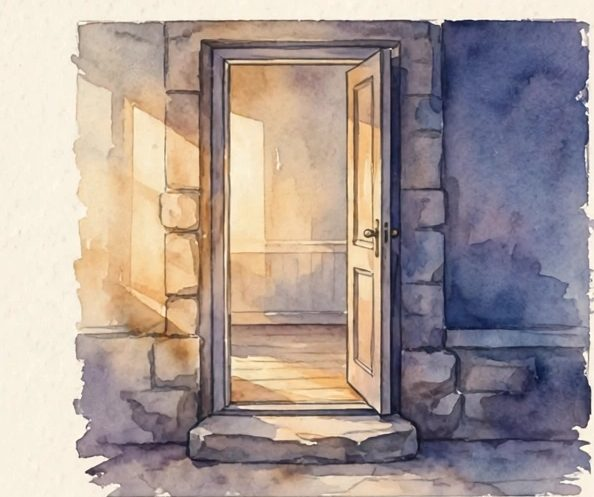
A doorway standing open between a golden morning room and a blue evening room, one threshold stone between them.
This house keeps a single claim, and it makes it at the door, before anything else is shown. A person can sit down to breakfast as one self and rise from supper as another, and neither of those selves is a lie. The change does not need thunder to be real. It does not need witnesses, or a crowd, or even a feeling at the time. It needs only a day — an ordinary date in an ordinary year — across which a life quietly crossed from before to after, the way a traveler crosses a border river at a shallow place, barely wetting the boots.
The house is arranged as a day book is arranged: page by page, date by date, with one date underlined. Ten halls hold a hundred and twenty rooms, and every room belongs to that one underlined day or to the selves who stand on either side of it. There are rooms for the morning of, when nothing had happened yet and the kettle was only a kettle. There are rooms for the chosen days and the unchosen ones, for the before self who is not disowned, and for the after self who is not required to apologize for arriving.
Walk slowly. The keeper asks only that the day be looked at the way it was lived: in hours, not in headlines. Breakfast first, then the hour before, then the sentence or the signature or the ringing telephone, then the evening and the mirror. Nothing in these rooms will tell you the change made the person better. Nothing will tell you it made them worse. The house describes; it does not grade. Before and after are both yours — that is the whole of the law here, and it is written over the door so no one has to take it on trust.
2The House of Before and After
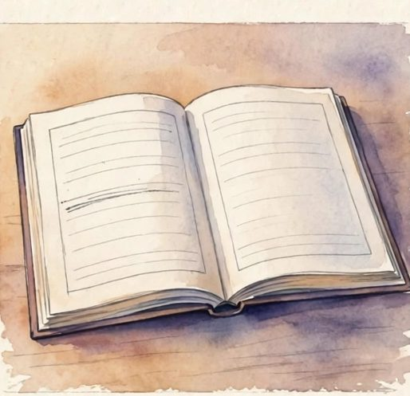
A day book open on a table, ruled pages blank, one line underlined in pencil.
The house has two wings and one roof. The west wing holds the before: the breakfasts eaten without knowing, the coats worn without ceremony, the plans made in a voice that has since changed its mind about nothing it can name. The east wing holds the after: the same rooms, the same stairs, the light arriving from a slightly different angle. Between the wings there is no wall. There is a doorway, and on the floor of the doorway a single threshold stone, worn in the middle by everyone who has ever crossed it.
Visitors sometimes ask which wing is the true house, and the keeper answers that the question is the only false thing in the building. The before wing is not a rough sketch of the east, and the east is not the corrected edition of the west. Each was, in its season, the whole life of the person who lived there. The day book on the table between them is not a judge's ledger. It is a record: dates, hours, a coat described, a sentence set down exactly as it was heard.
The house is kept plainly, on purpose. There are no banners in the hall and no arrows on the floor pointing from worse to better. The kettle in the before kitchen is the same kettle in the after kitchen, and it boils at the same unhurried pace. What changed was never the furniture. What changed was the person who walked among the furniture, and the house honors that change the only way it knows how: by keeping both wings swept, both lamps trimmed, and the door between them standing open at all hours.
3One Date, Underlined
In the day book, one date is underlined. Not circled, not starred, not written larger than its neighbors — underlined, once, in pencil, the way a person marks a line in a borrowed book they fully intend to return. The modesty of the mark is the point. The day itself was not modest. It may have held a signature, a departure, a telephone ringing in the hall. But the mark it left in the book is small, because the book is honest: the date did not do the changing. The date is only where the changing can be found.
Other dates crowd around it, unmarked, and the keeper insists they are not lesser days. The underlined date did not eat the year. Birthdays stand on either side of it, still entitled to their candles. Ordinary Tuesdays lean against it in the book and are not pushed away. The underline simply says: here. Here is where the before stopped being the whole story. Here is where the after began, whether anyone in the house noticed at the time or whether the noticing came years later, in another country, over a different breakfast.
A visitor may wonder why the mark is in pencil and not in ink, and the answer is the kindest thing the desk knows. Pencil can be moved. A life may hold several underlined dates before it is done, and a later hand may find that the true border stood a month earlier, or a year later, than the first marking claimed. The book allows the correction without shame. The line moves; the life does not have to be rewritten around the embarrassment. What matters is that a line exists somewhere — a place the memory can stand and say: on one side of this, I was that person.
4The Keeper of the Day Book
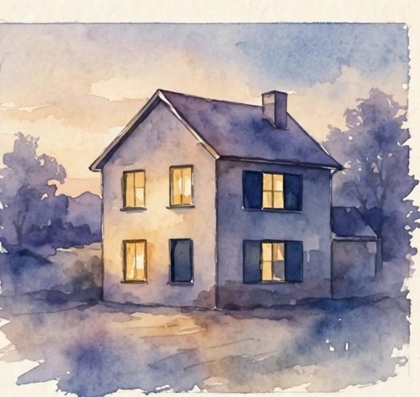
A house at dawn, half its windows gold, half still blue with night.
The keeper of this house is the Keeper of the Day Book, and the whole of the job is written on the first page of the book itself: keep the dates, keep the rooms, keep the door between them open. The keeper signs nothing, decides nothing, and grades nothing. When a visitor arrives carrying a day they have never known what to do with, the keeper does not reach for an explanation. The keeper reaches for the book, turns to a clean page, and asks the only opening question the house allows: who were you at breakfast.
The keeper has an underlined date of their own, kept in the same book, in the same pencil, no grander than anyone else's. This is house law: nobody keeps the day book from outside it. The keeper's own before self had a coat that is still hanging somewhere in the west wing, and the keeper does not mock it, and does not wear it, and does not throw it away. Some evenings the keeper walks the border path between the wings the way other people walk a dog — slowly, habitually, grateful for the company of both sides.
Everything the keeper owns fits the work: a pencil worn short, a lamp for the evening pages, a kettle that has served both selves without comment. The keeper's handwriting is famously plain. Dates, hours, weather, a coat described, a sentence set down whole. No adjectives of triumph, none of ruin. Visitors who expect the keeper to be moved by their day are sometimes disappointed, and then, usually, relieved. The book does not need their day to be a story. It needs their day to be recorded. Those are different mercies, and the second one lasts longer.
5Someone at Breakfast
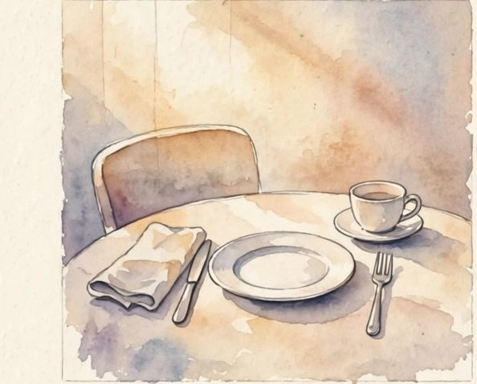
A breakfast table set for one, untouched, in early light.
Begin where the house always begins: at the breakfast table, before anything has happened. Someone sits there in the early light with tea going lukewarm and a whole day arranged ahead of them like a road they have walked a hundred times. They have plans of the ordinary kind. They have opinions they have held for years and see no reason to examine. They do not know that by supper the chair will hold someone else — someone with the same name, the same hands, and a different country quietly established behind the eyes.
The house is tender toward the person at breakfast, and the tenderness is deliberate. It would be easy, from the far side of the day, to look back and find that morning self naive, or slow, or standing in their own light. The day book forbids the sport. The person at breakfast was not a rough draft of the person at supper. They were a complete person, mid-life, mid-sentence, doing the sums of their existence with the figures they had. The figures were about to change. That is all. That is the entire indictment, and it acquits.
So the first entry in every page of the day book is a description, written before any verdict is allowed near the ink. What was on the table. What the weather promised. What the person at breakfast believed the day would ask of them, and what they believed, without checking, about themselves. Later entries may be dramatic; the first one is not permitted to be. It must be plain, because plainness is the only fair witness the morning self will ever get. The after self has a whole life to make the case for the change. The before self has this paragraph.
6Different Is Not Better
The second thing the house says, it says early, because everything else depends on it: different is not better. The sentence is not a comfort and it is not an insult. It is a refusal — the house's refusal to grade a human change the way markets grade a product. The person at supper is not the improved model of the person at breakfast. Nothing has been upgraded, patched, or perfected. A border was crossed, that is all, and borders do not run uphill in one direction and down in the other.
The refusal cuts both ways, and the keeper applies it with an even hand. If the after self may not be called better, the before self may not be called worse — not the foolish draft, not the dark ages, not the long mistake before the real life began. People who insist on the upgrade story usually need it for a reason: to make the day bearable, or to make the leaving forgivable. The house understands the need and declines to serve it. The day was bearable, and the leaving was a leaving, without any story gilding the scales.
What the house offers instead of better is a pair of plainer words: before and after. They are directions, not ranks. They say where a thing stands in time and nothing about where it stands in worth. A keeper can grieve the before and love the after inside the same hour, and the book records both entries on the same page without finding any contradiction to resolve. That is what neutral words are for. They hold the door open so that honest feelings, which are rarely neutral, can come and go without having to forge a passport.
7The Day Is Named Later
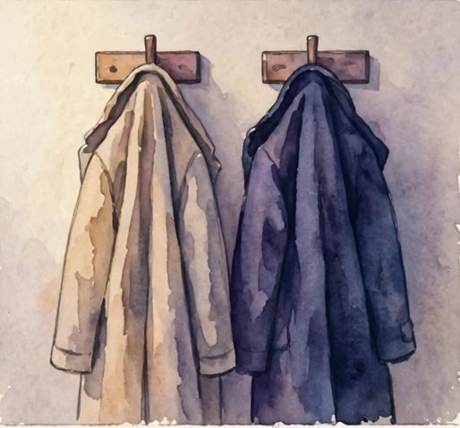
Two coats hanging side by side on hooks, one light, one dark.
Almost nobody names the day on the day. This surprises visitors, who imagine the bells must have rung, the sky done something noticeable at the border. Mostly, the person lives the day at ordinary speed and files it under errands, weather, a headache, a long queue. The naming comes later — sometimes years later, at another breakfast table, in another town — when the whole shape of a life is suddenly visible from a distance, and one date stands up out of the crowd of dates the way a face stands up out of a platform of strangers.
The late naming is not a falsification, and the day book is strict about this. The border was crossed on that date whether or not anyone saluted. A river does not wait for the map before flowing, and a person does not wait for the story before changing. What the later naming adds is not the change but the knowledge of it — the handle by which the whole heavy thing can be carried. Without the handle, the change still happened; it simply had to be dragged, unnamed, through every retelling of the life.
There is a mercy in the delay, if a person cares to see it. The day itself was spared the weight of its own significance. Nobody had to perform the turning point while it was happening, or rise to the occasion of their own biography between the telephone and the tea going cold. The person simply did what the day asked, in their ordinary clothes, with their ordinary courage or ordinary fear. The meaning arrived afterward, at walking pace, like a letter forwarded from an old address. The house approves of the arrangement. Meaning is heavy luggage. It is better delivered late than carried all day.
8No Witnesses Required
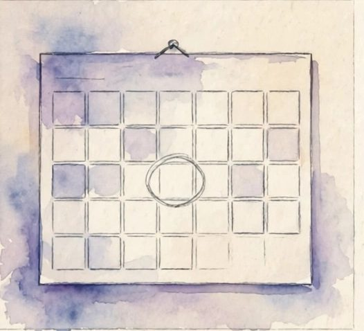
A wall calendar of blank squares, one square circled in pencil.
Many of the days in this book happened in front of nobody. No friend was present. No family gathered. The person signed alone, or heard the news alone, or quietly became someone else in a rented room with the curtains drawn against an ordinary afternoon. Visitors sometimes speak as if this weakens the day's claim — as if a change unwitnessed were a tree falling in an empty forest, more rumor than fact. The day book rejects the doubt entirely. The keeper's own entry for this room is one line long: the signature was real, and the hand that made it was there.
The world's failure to notice is entered in the book too, but in a different column. Colleagues went on asking the same questions. The shopkeeper used the same greeting. Supper was discussed in the same tone by people who did not know that the person across the table had crossed something at noon. None of this is evidence against the day. It is evidence about eyesight, which is a local and unreliable instrument. Plenty of borders are crossed at night, in fog, by travelers who themselves are the only customs officers on duty.
So the book keeps a rule about testimony: a day may be entered on the word of the person who lived it, and no corroboration is required at the desk. The keeper does not ask for photographs, or for a second signature, or for the name of someone who saw the look on the person's face at the relevant hour. The person's own account, plainly given, is stamped and filed. If the change shows itself to others later — in a steadier voice, a different road taken at the same junction — that is their business. The record was already complete.
9A Border, Not a Verdict
What the underlined date marks is a border, and the house asks visitors to be precise about what borders are. A border is where one country ends and another begins. It is not where one country is condemned. Nothing in the crossing declares the before country barbarous or the after country blessed; the line on the map carries no opinion about either soil. The person who crossed is a traveler, not a defendant, and the day book is the record of a journey. Courtrooms keep different books, in a different hand, and this is not one of them.
The distinction matters most in the years afterward, when the story is told and retold and quietly acquires decorations. A told day wants to become a verdict: the day I finally saw sense, the day everything went wrong, the day the real life started. The book resists each decoration with the same flat pencil. Borders can be revisited in memory — walked up to, looked across, stood beside in thought — but they cannot hand down sentences. The before self is not serving time. The after self is not on probation. Both are citizens, in full standing, of one life.
The keeper will sometimes take a visitor to the threshold stone and stand there a while, saying nothing, because the room's whole argument is underfoot. A stone. A line worn into a floor by feet going one way, mostly, and by memory going both. That is all a border has ever been, in this house or out of it: a place to stand where the whole of a life is visible in both directions. Stand there long enough and the itch to judge quiets. What remains is the geography. Before, there. After, here. Both of them yours.
10Chosen Days, Unchosen Days
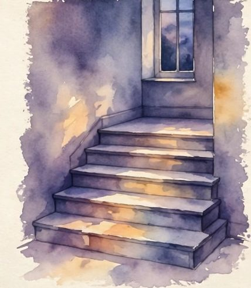
A staircase landing with a window, the light changing on the steps.
The day book sorts its days into two great companies, and the sorting is the last act of judgment the house permits. Some days were chosen: a yes spoken, a no spoken, a signature, a train boarded at dawn with a ticket bought in full knowledge. Others arrived unchosen: a telephone ringing in the hall, a letter with a foreign stamp, news delivered at a door by someone whose face was already an apology. Both companies are entered in the same hand, on the same paper, under the same lamp. The book keeps no separate shelf for the brave.
Between the two companies the house allows no ranking of honor. The chosen day is not braver than the unchosen one; it merely had a door with a handle on the inside. The unchosen day is not nobler for its suffering; it merely arrived by the window. What the keeper records for each is the same small set of facts: the hour, the weather, who was at breakfast, who was there by supper. A signature and a phone call weigh the same on the book's scales, once the years have finished loading them.
One warning belongs in this room, and the keeper gives it without softening: for the unchosen days, no silver lining is owed. The house will not finish the sentence that begins with at least. Whatever grew afterward grew afterward; it does not retroactively decorate the phone call. The book honors the unchosen day by recording it plainly — what it took, what it left standing, how the evening was anyway — and by refusing to bill the person for gratitude. Chosen days get the same plainness, as it happens. The lamp does not flatter either company.
11Both Selves Keep Their Rooms
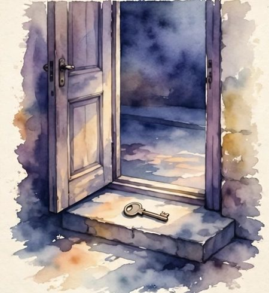
A key resting on a threshold stone at an open door.
Neither self is evicted. That is the arrangement the whole house exists to protect, and it is stranger than it first sounds. The before self keeps their room exactly as it was left: the coat on the hook, the opinions in the drawer, the breakfast things unwashed in a purely ceremonial sense. The after self does not move in with boxes and opinions about the furniture. They take the room across the hall, which was always there, waiting with its own window and its own weather, and the two households proceed under one roof.
This is harder than it sounds, because the after self usually wants the keys to everything. Fresh from the crossing, they are full of administrative energy: the old room embarrassed them, the old coat should go to a charity shop, the old opinions should be burned in a tidy pile behind the house. The keeper allows none of it. What is kept is not kept out of sentimentality. It is kept because the after self will need, someday, to visit that room — to borrow something, to remember something, to apologize or to be astonished.
Nor does the before self get to haunt the new room like a landlord inspecting for damage. Their visiting hours are the same as anyone's: memory admits them, kindly, and shows them out again at a reasonable time. The house runs on this courtesy in both directions. Two selves, one life, no evictions, no occupations. When visitors ask how it is managed, the keeper points to the simplest instrument in the building: the door between the rooms, which opens both ways, and which nobody, on either side of it, is permitted to lock.
12The First Rule of the Day Book
The first rule of the Day Book is written on the inside of the front cover, where rules are kept in houses that mean them. It reads: the day shall be recorded plainly — who you were at breakfast, what happened, who you were by supper — without the word better and without apology. Everything else in the book is commentary. The keeper enforces the rule with a mildness that visitors sometimes mistake for softness, until they try to enter the word finally into a page, or the word ruined, and find the pencil quietly taken out of their hand.
Plainly is the working word, and it is stricter than it looks. Plainly means the rain is recorded as rain, not as an omen. The sentence that did it is written down whole, in quotation marks, without a trembling hand adding music to it. The coat is described — its color, its pockets, its one missing button — and not recruited as a symbol of anything. Symbols may arrive later if they insist; the book does not employ them. The book employs facts the way a good inn employs towels: clean, sufficient, and exactly where you need them.
The rule has a second clause, added in the same hand on a later page, and it is the clause visitors copy out most often. It reads: nothing in this book shall be used against the person who lived it. The day book is not evidence. It cannot be produced in the arguments a person has with themselves at three in the morning, and the keeper will not certify copies for that court. The book exists so the day can be kept, the way a letter is kept — not to be won with, but to be returned to, in quieter weather.
13It Began Like Other Days
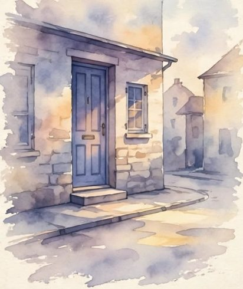
An ordinary morning street in soft light, a house door just closed.
The day began like other days, and the book insists on the ordinariness as a matter of record. The alarm, or the light, or the neighbor's dog did its usual office. The stairs took the usual number of steps. Nothing in the plumbing announced itself. If there was a headline forming anywhere, it was not forming in that kitchen. The person washed, dressed, and ate at the speed of a life that expected to continue unchanged, and the house honors the expectation: it was reasonable. Most days keep that promise. This one was already, quietly, not going to.
There is a temptation, in the retelling, to load the morning with signs: the cup that slipped, the bird at the window, the song on the radio that seemed, later, to have been about everything. The keeper enters these details if the visitor insists, in a margin, in smaller writing, clearly labeled as later arrivals. The day itself is not blamed for failing to announce itself. Days are not telegrams. A morning is allowed to be only a morning, even when history is standing in its hallway with its coat still on.
So this room is furnished plainly, as an exhibit of an unremarkable start: a bed made or unmade in the usual way, a window opened on weather that had not yet decided anything, a list for the day written in a hand that expected to cross the items off. Nothing is arranged for effect. The keeper believes the plainness does the day a justice that drama never could. It proves that a life does not need to be struck by lightning to change its address. It needs only a morning like this one, and then an hour in it, and then the next thing.
14The Last Ordinary Morning
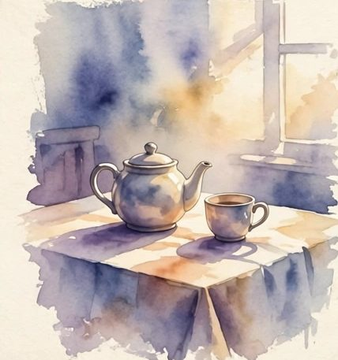
A kitchen table with a teapot and one cup, morning sun across it.
Every underlined day has one, and the book gives it a room of its own: the last ordinary morning. It is not known to be the last while it is happening, which is the whole of its character. The bread is cut with the usual knife. The radio murmurs the usual weather. The person looks out at a street they have looked out at for years and sees, correctly, a street. Ordinariness is doing its finest work that morning and does not know it is retiring. The entry in the book is written afterward, in a gentler hand than most.
What makes the morning last is never visible from inside it. From inside, it is simply Tuesday, or the third, or the day the rent is due. Its lastness is a quality conferred later, the way a photograph of a demolished street becomes precious only after the demolition. The keeper therefore forbids a certain cruelty: the morning self must not be described as blind. They were not blind. They were looking at the morning with morning eyes, which is the only equipment anyone has ever been issued for the purpose, and it is not defective equipment.
Visitors sometimes ask whether they would go back and warn that morning, if the border could be crossed with a message. The keeper records the question and declines, on the house's behalf, to answer it. The morning was not a mistake to be corrected by post. It was a room that was lived in fully, and its furnishings — the unhurried tea, the unexamined plans, the coat taken down without a thought — are not props in someone else's tragedy. They are the last ordinary morning's own possessions, and the book keeps them catalogued, dusted, and entirely unjudged.
15What I Wore
The day book is particular about clothes, and visitors laugh until they understand. What a person wore on the day is entered in full: the coat, the shoes, the shirt chosen without a thought from the front of the wardrobe. The entry matters because the clothes are the morning self's signature. They dressed for the day they expected. Nobody buttons a coat for a border crossing they do not believe in. The wardrobe of that morning is a sworn statement about what the world was, hours before the world amended itself.
Sometimes the clothes were chosen the night before, and the book records that too, because it is the most touching detail in the whole archive. The before self, on the last evening of being simply themselves, laid out a shirt for a stranger. They chose the good shoes for a day whose errands they had entirely wrong. There is no irony in the entry, and the keeper strikes out any that visitors try to add. A person laying out clothes is performing an act of faith in tomorrow. The book respects faith wherever it finds it, including misplaced faith.
By supper, of course, the clothes had changed their meaning without changing a stitch. The coat that left the house as everyday wear came home as a relic: the coat I was wearing when. People keep such garments for years, unworn, at the back of wardrobes, and the book understands that too. It is not superstition. It is the closest thing the body has to a bookmark. The keeper's instruction for this room is brief: describe the clothes exactly, note when they were chosen, and let them testify. Clothes, like mornings, are witnesses that never learned to lie.
The Day Book Desk
One desk receives all correspondence for this house — questions, corrections, and word of any underlined date: a day chosen, a day that arrived unchosen, a before self remembered kindly, and how the after looks from here. It is read in the order it arrives.
16Breakfast, Unknowing
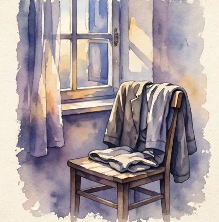
A chair with clothes laid over it ready, by a window.
Breakfast was eaten in ignorance, and the book means that as praise. The eggs, or the bread, or the porridge cooling in its bowl were consumed by a person who did not know they were dining with history. They thought about the errands. They thought about the weather and the small itch of an unpaid bill. The not knowing was not a failure of attention. It was the ordinary mercy by which a person is allowed to enjoy a meal without standing guard over it, every mouthful audited for significance.
The keeper has read a thousand of these breakfasts in the book, and they are all the same and all different, like snowflakes in a ledger. One person ate standing at the counter, in a hurry they would later find poignant. One ate slowly, celebrating nothing, with the newspaper folded to the crossword. One skipped breakfast entirely, which the book records without comment, because the day is not required to begin with a meal to qualify as a border. It is only required to begin, and to be lived by someone who does not yet know.
There is an etiquette for this room, and the keeper states it at the door: do not pity the breakfast. Pity is a verdict wearing soft clothes, and the first rule of the book forbids verdicts. The person at that table was not a child about to be told bad news. They were an adult in full possession of a morning, eating the food of their own life in their own kitchen, in complete and legitimate ignorance of the hour approaching. The house finds the scene, on the whole, enviable. Most people, most mornings, are never again so peacefully sure of anything.
17The Hour Before
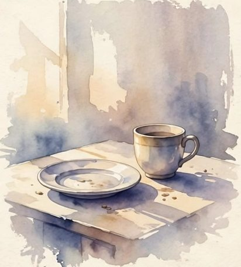
A plate and a cup left on a table, a day beginning around them.
The hour before is the most quietly furnished room in the hall, because nothing in it knows it is an antechamber. The kettle is filled. A letter is finished and sealed, or a coat is brushed, or the dog is let out into a garden that smells of itself. The person moves through the hour the way a river moves through a meadow, at the local speed, around the local stones. Somewhere ahead, unheard, the day is clearing its throat. The hour before does not hold its breath. Hours rarely know enough to.
The book is careful to record the hour before without smuggling the day into it. It would be a small forgery, and the keeper does not deal in small forgeries. The person in that hour had plans that extended innocently past the border: a purchase to be made in the afternoon, a grievance to be nursed on Thursday, a hat to be collected from the cleaner. The plans are entered verbatim, unedited by later knowledge. They are evidence of a life in good working order, not of a life failing to read its own weather.
If a visitor lingers in this room, it is usually because their own hour before is the part they cannot stop revisiting: the last hour in which the world was arranged the old way, and they were its unknowing citizen. The keeper lets them linger. There is no schedule in this hall. But the keeper will say, eventually, the thing the room exists to say: the hour before was not a debt. Nobody is required to have spent it better, or braver, or in prayer. It was spent living, which is the only currency hours accept.
18A Door I Walked Through
It was, in most of the book's accounts, a perfectly ordinary door. It had a handle of the usual kind, hinges that may or may not have complained, a draught that came under it in winter. Offices have such doors, and hospitals, and registry buildings, and the houses of friends. The person walked through it as one walks through doors: without ceremony, in mid-errand, sometimes still thinking about the coat, or the parking, or whether the kettle had been left on. The door did not announce itself. Doors in this book never do.
What happened on the far side of the door is the day itself, and it has rooms of its own further down the hall. This room keeps only the threshold: the step, the handle cooling in the palm, the brief and unremarkable air of the corridor beyond. The keeper is fond of the detail that the person, crossing, often held the door for someone else, out of habit — a stranger, a colleague, nobody remembered. Courtesy continued on both sides of the border without interruption. The world did not pause to let a life change. It held the door.
People sometimes return to that door, in fact or in memory, and stand in front of it with an air of pilgrimage. The book records these visits kindly. The door, for its part, is usually still just a door: repainted, perhaps, or fitted with a new handle, conducting the ordinary traffic of the building without any consciousness of its place in a biography. The keeper finds this right and proper. A threshold is a tool, not a monument. Its honor was never in being admired. Its honor was in opening, once, at the ordinary hour, for the ordinary person who walked through and did not come back the same.
19The Sentence That Did It
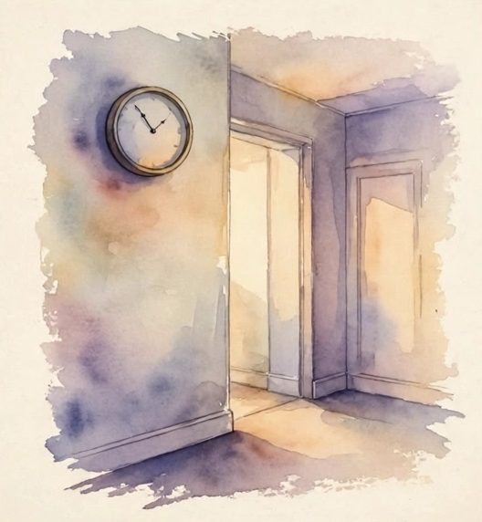
A hallway clock with a plain face and no numerals, late-morning light falling across it.
For many of the days, the book can name the sentence. It was spoken in an ordinary voice, in an ordinary room, and it divided the day the way a knife divides bread: without violence, completely. Sometimes it was a sentence of fact. Sometimes it was a sentence of permission. Sometimes it was a question, which the book also counts, provided the question was the kind that cannot be un-asked once it has been heard. The keeper writes it down whole, in quotation marks, with the speaker named where the speaker can be named.
The remarkable thing, reading down the pages, is how short the sentences are. The language of borders is not grand. It fits in a hallway, in a doorway, in the pause while a kettle is lifted off the heat. Lengthy speeches change nothing; the book contains almost none. What changes a life arrives in the grammar of the everyday — a name, a number, a yes where a person had arranged their whole morning around a no. The keeper's margin note for this room is famous in the house: count the words. There are never many.
The person who spoke the sentence is entered in the book without indictment, which surprises visitors who come looking for a villain. Sometimes the speaker was a stranger doing a job. Sometimes it was a beloved voice, shaking. Sometimes it was the person's own voice, saying the thing at last into a quiet room, and hearing how different the air was afterward. The book does not rank these speakers. A sentence is a sentence. It crosses the border like weather crosses a border: without applying for permission from either country, and is rained on both alike.
20The Room Where It Happened
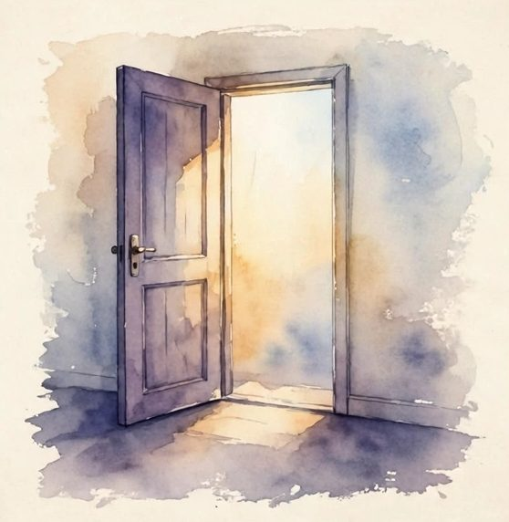
A door half open, bright ordinary light beyond it.
The room where it happened is described in the book with a surveyor's care. Its size, its windows, its furniture, the quality of its light at the relevant hour. Most such rooms are unremarkable to the point of comedy: a kitchen, a corridor office, a ward, a front hall with a mat that said nothing to anyone. The day did not require marble. It required four walls and a person standing in them at the moment the sentence was spoken or the paper was signed. Afterward, the room went back to its duties. They all do.
And yet the person can never enter that room again as a neutral citizen. Other people use it daily and notice nothing; the coffee machine hums, the chairs scrape, the light does its rounds. But the one who crossed there walks in as an emigrant revisiting the port of departure. Everything is smaller than remembered, or cleaner, or more ordinary than the memory can forgive. The keeper's note reads: the room is innocent. It is the geography that is loaded. A room cannot help the use a life once made of it, any more than a harbor can help its departures.
Some of the rooms no longer exist, and the book has a notation for that too: demolished, converted, painted beyond recognition, let to strangers who eat their breakfasts in it without the least idea. The keeper enters the fact without alarm. The room's disappearance does not retire the day. If anything, the book grows fonder of such entries, because they prove the day's independence: the change survived its own scenery. The person carries the room now, the way a snail in a fable carries its house — not as a burden in the story, the keeper insists, but as an address.
21Who Was There
The book keeps a cast list for the day, and it is shorter than visitors expect. There was the person. There was, often, one other: the bearer of the sentence, the witness to the signature, the voice at the other end of the wire. Sometimes there was a small official audience of clerks and strangers, present the way furniture is present. The room did not fill with everyone who mattered. Most of the people who mattered were elsewhere, eating their own breakfasts, and learned of the day the way weather learns of other weather: later, by report.
Some of those present never knew what they had attended. The clerk who stamped the paper stamped forty papers that day and remembers none of them. The nurse, the registrar, the colleague holding the door — they appear in the book as what they were: honest extras in someone else's underlined date, playing their own leading roles elsewhere. The keeper insists on the symmetry. On the same morning, in some other room of the world, the person at breakfast was an extra in a stranger's day, equally unknowing, equally essential to the scenery.
And some who were there carry the day differently ever after: the friend who drove, the sister who held the telephone, the one who was told first and told it gently to everyone else. The book gives them their lines and their dignity. They were the day's small company of witnesses, though the house maintains, stubbornly, that witnesses were never required. There is a difference between needed and honored. The door list of the day is kept the way a guest book is kept: not as proof that the day occurred, but as thanks that nobody crossed entirely unaccompanied.
22The Weather That Day
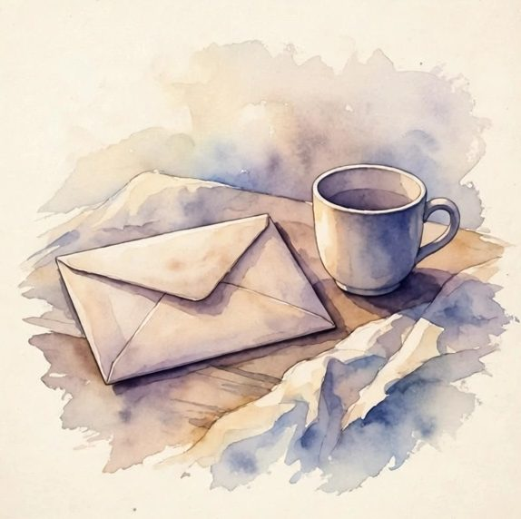
An envelope resting on a table beside a cup, the window bright behind it.
The weather of the day is entered like everything else: plainly, completely, and without being asked to mean anything. Rain, in many entries. A wind that worried the trees along the street. Heat that made the room close, or a bright indifferent blue that has embarrassed more than one visitor, who felt the sky ought to have marked the occasion. The book holds the meteorological record to be a form of respect. The day happened in a world, and the world had weather, and the weather was doing its own work, entirely unbothered by the biography indoors.
And yet people remember the weather of their day with a fidelity that shames their memory for faces. Ask them who else was present and they hesitate; ask about the sky and they answer at once. It rained the whole way home. The light that evening was the color of weak tea. There was frost on the inside of the window. The book understands this loyalty. The weather was the day's largest witness, present at every hour, indoors and out, and it never once presumed to interpret what it saw. Weather is the perfect registrar: total attendance, no opinions.
The keeper draws one line under this room's entry, and visitors copy it into their notebooks more than almost anything else in the hall: the weather was not a message. The rain was not the sky's sorrow and the sunshine was not its blessing. To read them so is to bill the clouds for a meaning they never agreed to carry. Let the storm be a storm that happened on the day, the way the coat was a coat that was worn on the day. Both are true. Neither is a verdict. The record is richer for keeping them separate.
23I Did Not Feel It Happen
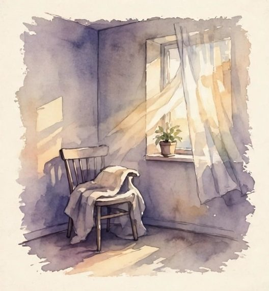
A room in the last hour of morning, everything usual, the light gathering.
The most common testimony in the book, and the one visitors find hardest to believe until they find their own page, is this: I did not feel it happen. No bell in the chest. No wind through the soul's house. The person signed, or listened, or stood up from the chair, in a state of complete sensory ordinariness, and only discovered the border later, the way one discovers a tide line on a beach — by the mark it left, not by the moment of the water. The crossing was silent. The book is full of silent crossings.
This troubles the dramatists among the visitors, who feel cheated of a scene. They want the floor to tilt, the light to change its color at the relevant minute, the person's hand to shake visibly over the page. The keeper is gentle with them. Feeling, the keeper says, is weather, and weather is unreliable evidence about geography. A border is a line on the map whether the traveler crosses it in a storm of emotion or in a flat calm with a sandwich in one hand. The map does not consult the traveler's nerves before drawing itself.
In fact, the book has begun to suspect that the feeling arrives precisely as late as the naming does, and for the same reason: both are delivered by the backward-looking mind, which is the only department equipped to issue them. On the day itself, the forward-looking mind was busy — holding doors, answering sentences, finding the right form at the right window. It had no clerk to spare for significance. So the entry stands, in page after page, in the plainest hand in the archive: nothing was felt. Everything had happened. The book underlines the second sentence, never the first.
24Evening, and the Mirror
The day ends, as days in this book are required to end, at the mirror. The person comes home through weather that has not changed its mind, takes off the coat that left the house that morning as everyday wear, and stands a moment in the hall or the bathroom or the bedroom doorway, looking at whoever has arrived. The face is the same face. That is the first thing the mirror reports, and it reports it without malice. Same eyes, same tiredness around them, same hair doing what it decided to do at breakfast.
And yet nobody in the book is fooled by the mirror's first report, including the mirror. Something in the looking is different, even when nothing in the looked-at has changed. The person at supper studies the face the way an emigrant studies a photograph of a street they used to live on: lovingly, forensically, aware that the street has gone on existing without them and that they have gone on existing without the street. The book's instruction for this room is famous: believe both reports. The face is the same. The person is not. Mirrors are only responsible for the first.
What happens at the mirror is not a reckoning, and the keeper enters objections whenever a visitor calls it one. Nobody is summed up there. The person washes, or does not wash, changes out of the day's clothes, puts the kettle on in a kitchen that is legally the same kitchen and emotionally a foreign port. Supper is made, or bought, or skipped in the new country's first small act of self-government. The book closes the day the way the day closes itself: without ceremony, with a light left on in the hall, with someone different asleep in the familiar bed.
25The Day I Said Yes
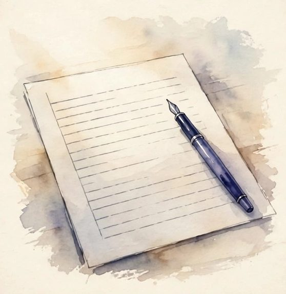
A pen resting on a document of ruled lines only, morning light across the page.
The chosen days begin, in the book's ordering, with the yes. It was said in a room with ordinary light, by a person who had rehearsed it in several keys and then, at the moment, used none of them. The yes that changes a life rarely sounds the way it sounded in rehearsal. It comes out smaller, or faster, or with a laugh in it that the rehearsals had not included. The book records the actual yes, not the intended one. The intended ones are filed elsewhere, in the great archive of speeches nobody has ever given.
A yes of this size is not a mood. The book is clear that the person who said it had usually been saying no, or not yet, or let me think, for a long and honorable season, and that the season is part of the entry. The yes did not interrupt a life; it concluded an argument the life had been conducting with itself, in installments, over breakfasts and late trains and other people's weddings. When it finally arrived, it arrived with the force of a signature: brief, binding, and strangely quiet in the hand that made it.
The house permits one decoration on this page, the only one in the hall: the yes is entered in the book exactly as it was spoken, with its hesitations left in. The um, the breath, the glance at the window — all of it stays, because all of it was load-bearing. A polished yes would be a forgery of the day. The person who reads their page years later does not need to meet a marble statue at the border. They need to meet the actual traveler: frightened, ordinary, mid-sentence, saying the word that moved the furniture of a life.
26The Day I Said No
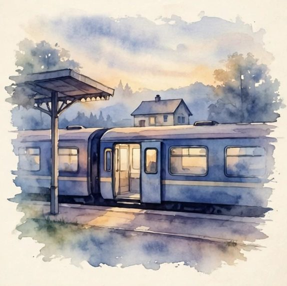
A train at a small station at dawn, one carriage door open.
The no gets its own room, directly across from the yes, and the two rooms share a wall. The book will not say which of them is load-bearing. The no that changes a life is usually quieter than the yes — it has had longer to practice. It was said at a table, or into a telephone, or standing in a doorway with a coat half on, and it was said in the tone of a person closing a window against weather: not in anger, most days, but in a final, ordinary recognition of temperature.
Visitors tend to assume the no was aimed at a villain, and the book corrects them with its usual patience. Often the no was said to something reasonable, even something good — a decent offer, a kind family, an honorable road that simply was not theirs. That is what made it expensive. A no said to a monster costs nothing and changes little. A no said to a respectable life, in full daylight, with everyone's disappointment arranged around the table like place settings — that is the no that gets a date in this book.
The afterlife of a no is different from the afterlife of a yes, and the book keeps them in separate ink. A yes opens a road and the road makes its own noise. A no closes a road, and the closed road stays silent and strangely present, like a room in the house that nobody enters anymore but everybody walks past. The person who said it visits the silence sometimes, in memory, and the keeper's instruction stands for both rooms of this hall: do not ask the road you closed to apologize for being closed. You closed it. It is allowed to stay quiet.
27The Day I Left
Some leavings are prepared for months, with boxes, and some are prepared in eleven minutes with a bag. The book makes no distinction of rank between them. What it records is the leaving itself: the last circuit of the rooms, the hand on the doorframe, the small and devastating administration of a departure — the plant watered, the note left square on the table, the key arranged at its agreed angle. A leaving is a piece of work, like a harvest or a funeral. The person did it with their own hands, and the book honors the labor.
What a leaving is not, in this house's accounting, is a verdict on the place left. People leave good houses and bad ones, kind people and cruel ones, in roughly the proportions that life supplies, and the border is the same width in every case. The book refuses the popular arithmetic in which leaving proves the left thing was worthless. Sometimes a person leaves the best room of their life because the life, entire, is moving to another country. The geography is recorded. The morality is left, like the plant, for whoever comes next to water.
The moment of leaving itself is usually smaller than its reputation. A door closes at its ordinary volume. A vehicle pulls away at the legal speed. The street does not divide into those who understand and those who do not; it continues, commercially, in both directions. The leaver discovers, somewhere in the first hour, that the enormous thing has been done and the world has not even looked up — and the book records that discovery without deciding whether it is a grief or a relief. In most entries it is filed, eventually, as both.
28The Day I Signed
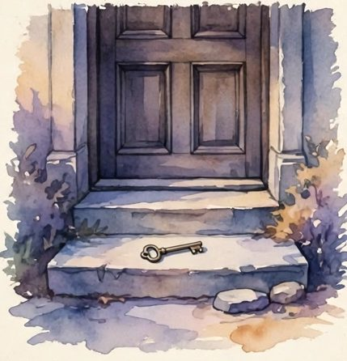
A key lying on a doorstep before a closed door.
A signature is the smallest possible border crossing: one name, written by its owner, in the space provided. The book is fascinated by the economy of it. Years of argument, months of dread, a whole season of breakfasts conducted under the shadow of the undecided thing — and then a pen, a line, a hand moving in the well-practiced loops it learned in childhood. The loops are the same loops the before self used on schoolbooks and birthday cards. The name they spell, from that hour, is the name of someone else.
The book catalogues the pens. This is not whimsy; the desk regards the pen as the day's chief instrument and gives it an instrument's respect. There is the pen provided by the office, chained or unchained. There is the person's own pen, brought for luck and then denied, politely, because the form required blue. And there is the famous moment, recorded in many entries, when the pen stopped — one second, no more — above the line, while the whole of the before life passed through the hand like weather through a wire. Then the hand continued. The entry always notes that it continued.
What a signature changes first is not the world but the tense of the signer. Before the signature, the life was written in the future conditional: if, when, unless, perhaps. After it, the same life declines to be hypothetical and begins, flatly, in the past and the present. The book treats this grammar as the day's true event, more reliable than any feeling the signer reported. Documents are dry, and the desk loves them for it. A signature does not tremble in the retelling, whatever the hand did at the time. It sits in its line, dated, witnessed or not, dividing the tenses forever.
29The Day I Told the Truth
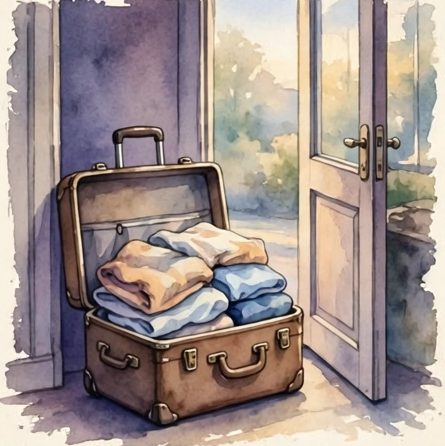
A suitcase packed and standing by an open door.
The truth, in this book, is rarely a speech. It is more often a sentence or two, spoken at a kitchen table or in a parked car, in the voice a person uses for groceries. It had been available for a long time — that is the entry's saddest and kindest finding. The truth did not arrive on the day. The day was merely when it was finally allowed out of the room where it had been kept, fed, and walked like a dog at night, and brought into the house's lit rooms to sit among the company.
What the telling changed first was the air pressure of the life, and the book records the change in those terms because witnesses report it in those terms. Rooms became easier to be in. Certain telephone calls stopped requiring rehearsal. The person discovered which of their relationships had been load-bearing truth and which had been held up by the not-saying — and the book, with its usual even hand, declines to call the second kind a kind of fraud. Structures stand many ways. Some stand on beams. Some stand on everything in the house leaning, politely, in the same direction.
The person who was told is entered with the same care as the teller, because the day had two citizens and the book serves both. Sometimes the hearing was gentle, and the day is remembered with a gratitude that has nowhere official to go. Sometimes it was not gentle, and the border, that day, ran between two chairs in one room. Either way, the telling is the underlined act. What grew from it grew later, in other seasons, and belongs to other rooms. This room keeps only the moment the truth changed its address: from the keeper's private rooms to the shared ones, with all its luggage.
30The Day I Got on the Train
Of all the chosen days, the train day is the one the book's visitors recognize fastest, because the train gives the border a timetable. There was a platform, a departure board, a last call of a purely commercial kind. The person stood with their bag in the smell of brakes and coffee, entirely free — that is the detail the entries agree on — to turn around, walk out of the station, and resume the before life by lunchtime. Nobody was going to stop them. The train was stopped for them, which is a different thing entirely.
Getting on the train is the last act the before self and the after self perform together, and the book describes it with something approaching tenderness. One of them bought the ticket. The other would arrive. Between the platform and the carriage door there are perhaps four steps, and whole biographies have turned on less. The person took them at walking pace, carrying their own bag, and sat down in a seat that faced, as seats do, either the way they were going or the way they had come. The book always records which way the seat faced.
What the train understands, and the book borrows the understanding, is that a departure is not an argument. The train does not denounce the station it leaves. It simply keeps the appointment printed on the ticket. People who got on trains in this book are therefore spared the entry's usual temptation — to justify the journey by diminishing the platform. The before life stands on the platform in the entry, in its coat, becoming smaller at the correct rate, entirely dignified. The person at the window does not wave, in most entries. They watch. Watching is the last courtesy between the two selves, and it is enough.
The Day Book Desk
One desk receives all correspondence for this house — questions, corrections, and word of any underlined date: a day chosen, a day that arrived unchosen, a before self remembered kindly, and how the after looks from here. It is read in the order it arrives.
31The Day I Handed Back the Key
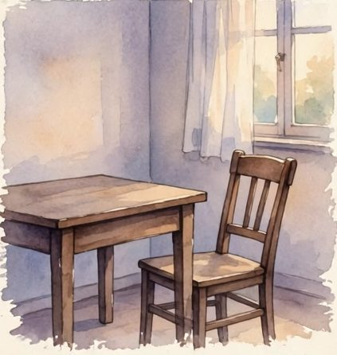
A chair pushed back from a table, a decision taken, the room empty.
Handing back a key is a small ceremony that nobody designs, and the book gives it the honors of a designed one. The key is produced from a pocket or a bag, where it has lived among the ordinary currency of a life, and it is placed — on a desk, in a palm, through a letterbox in the hardest entries — on the other side of the border. The hand that held it for years feels the absence at once, in the pocket, where the weight used to announce itself at every stair.
A key is the most literal instrument in this whole book. It does not symbolize access; it is access, cut in metal, one tooth per permission. To hand it back is to return a small, exact piece of the world — this door, this room, these hours of the day — to the custody of others. The book notes that people rarely rehearse the gesture and almost always perform it well, with a steadiness that surprises them. Something about the weight of the thing in the hand instructs the hand. Metal is a good teacher of ceremonies.
Afterward, the person keeps reaching for it. The book records this without a trace of mockery, because the reaching is the after self's first geography lesson: the body learns the new map slower than the mind signs for it. For weeks the hand goes to the pocket at doors that no longer belong to the life, and finds the space where the key was, and corrects itself. The correction is the border, crossed daily, in miniature, until the pocket forgets. The keeper's note is short: the pocket forgets last, and its forgetting is allowed to take its time.
32The Day I Asked for Help
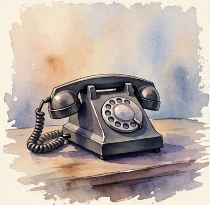
A telephone receiver resting off its hook on a table, the old instrument waiting.
The asking is entered in this book as a chosen day, and the placement is deliberate, because many visitors arrive believing their asking belonged among the unchosen. It did not. Asking is an act. It was rehearsed in mirrors and in cars, abandoned at the threshold a dozen times, and then, on the day, performed — usually in a smaller voice than the rehearsals, usually with an apology attached like an unnecessary stamp, and usually to a person who had been waiting, with mounting impatience, to be asked for years.
What the person feared, in the season before the asking, was a change of rank: that to ask was to descend, to be entered in other people's books in a smaller hand. The day itself usually refuted the fear within the hour, and the book records the refutation without triumphalism, because the fear deserves its dignity too. Help arrived, when it arrived, less like a rescue than like a kettle being lifted by the other handle. The weight did not vanish. It was simply, at last, being carried at both ends, which is what handles are for and what people, mostly, are for.
The keeper keeps a separate note for this room, in the margin, in pencil: the before self is not shamed by the asking. It was the before self who carried the whole weight alone, in silence, for the long season before the day, and the book honors the carrying as much as the asking. Both were forms of strength, of the two kinds the house recognizes: the strength of holding, and the strength of handing over. A life needs both kinds, in their seasons. The underlined date merely records the hour when one season, honorably, gave way to the other.
33The Day I Stood Up
In some entries the day has a posture, and this is the room for the most literal of them. The person stood up — from a chair, from a table, from the low and patient position in which they had conducted years of being agreeable — and the standing itself was the whole act. Nothing was smashed. No speech survives, in most entries, beyond a sentence or two. But the geometry of the room changed, because geometry is honest: a person upright occupies the world differently from a person seated, and everyone present did the arithmetic at once.
The book is careful about what standing up means, because visitors romanticize it at the door. It did not always mean defiance. Sometimes it meant leaving a meeting one was never going to be heard in. Sometimes it meant going, at last, to the window, or the door, or the telephone in the hall. And sometimes it meant standing to be counted beside somebody else, which the book records as the same act in a warmer key. The direction of the standing matters less than the book's one test: after it, the person did not sit back down into the old arrangement.
What the entry preserves, above the act, is the trembling. Legs are mentioned in this room more than in any other in the hall. The person stood up on legs that had opinions of their own about the proceedings, and the book refuses to edit the trembling out, because a steady-legged standing would be a statue's act, and statues do not get dates in this book. People do. The keeper's note reads: courage, in this house, is not the absence of the tremor. It is the tremor, completed — the whole weight of a life raised, shaking, to its feet.
34The Day I Let It Go
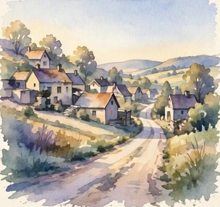
A road leaving a village in clear morning light, the bends ahead unhurried.
Letting go, as the book records it, was almost never an event. It was a decision taken so quietly that the day it belongs to is often disputed at the desk — claimed by the day of the argument, the day of the letter, the day the box was finally thrown out. The keeper arbitrates with the house's usual mildness: the day of letting go is the day the hand opened. That it opened by degrees, finger by finger, across a season, does not disqualify the date. The handle of a change is allowed to be a season wearing a date as its name.
What was let go of varies past listing: a grievance maintained like a garden, a hope that had become a landlord, a version of events in which the person was owed a different past. The book does not weigh them against each other. It notes, instead, the physical fact that survivors of the letting-go all report, sooner or later: the arms ache. Carrying anything for years — even anything weightless, even a story — sets the shoulders in a shape, and the shoulders keep the shape a while after the burden is set down. The ache is entered as evidence, and as a receipt.
The house has one quarrel to pick in this room, and it picks it with the phrase dropped forever. Nothing in these entries was dropped like rubbish, and nothing was let go of in contempt. A thing that was carried for years was, for years, worth carrying — it guarded something, or explained something, or kept a chair warm for someone. The letting go honors the carrying even as it ends it. The hand opens; it does not flick. And the day is underlined in the same pencil as all the others: not in triumph, not in bitterness, but in the plain ink of a completed labor.
35The Day I Started Over
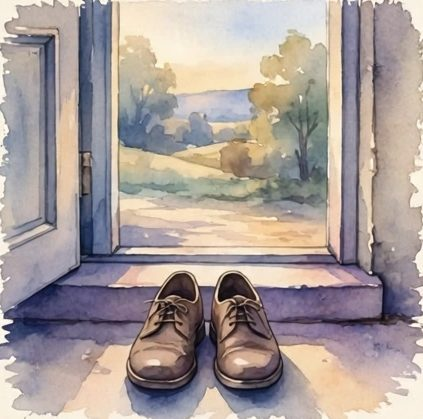
A pair of shoes set firmly side by side at a threshold.
Starting over is a phrase the book accepts at the desk and then quietly corrects in the margin. Nobody in these pages started from nothing. They started from where they were, with everything they had: the debts and the skills in the same suitcase, the grief and the good shoes, the address book with the old country's names still in it. The starting-over day is real, and it is underlined. But its true name, the keeper suggests, is the day I started again — again being the bravest word in this entire hall, because it admits the first attempt existed and mattered.
The day itself, in the entries, looks less like a sunrise than like a Monday. There was a form, or a broom, or a first shift, or a smaller room than the room before. The person began the again-life with the equipment of the old one, mended where mending was possible. The book insists on the modesty of the scene because the myth of the clean slate is one of the few cruelties this house actively opposes. A clean slate would mean the before was erased. Nothing here is erased. That is the whole architecture of the building: two wings, one roof, and a door that opens.
Years later, the people of this room are the ones who correct visitors most gently at the desk. A visitor says: I want to start over, meaning I want none of this to have happened. The started-over person, if one is present, is kind about it in a way that only experience makes possible. The wanting is honored. The arithmetic is declined. You start, they say, from the exact place where you are standing, which is the only place a start has ever been available, and the place turns out — this is the entry's last line, in many hands — to be enough.
36Chosen, and Still Frightening
This room stands at the end of the chosen hall like a customs post, and its entry is short because its work is simple: it cancels the idea that a chosen day is a calm day. The people of these pages chose, and were frightened, in the same hour, with the same hands. Choosing did not anesthetize anything. The signature shook. The yes came out through a dry mouth. The train was boarded on legs that had lodged a formal protest. The book records the fear alongside the choice, in the same ink, as part of the same act.
The fear is not evidence against the choice, and the house will argue this point with any visitor who brings it to the desk. Fear, in these entries, is usually just the accurate registration of size. The person was not frightened because they had chosen wrongly. They were frightened because they had chosen truly, and the true size of the thing was visible from the platform, and it did not shrink to fit the morning. A choice that frightens nobody is usually a choice about very little. The book has almost no entries for those, and underlines none of them.
Nor does the house allow the fear to be edited out in later editions, which is the temptation of every survivor who retells the day from the far side. From the far side, the choice looks clean and the chooser looks certain, and the story arranges its furniture accordingly. The keeper restores the trembling to every page where the years have tidied it away. This is not cruelty. It is a service to the next frightened chooser who comes to the desk believing their fear disqualifies them. It does not. It enrolls them, the book says, in the oldest company in the hall.
37The Day the Phone Rang
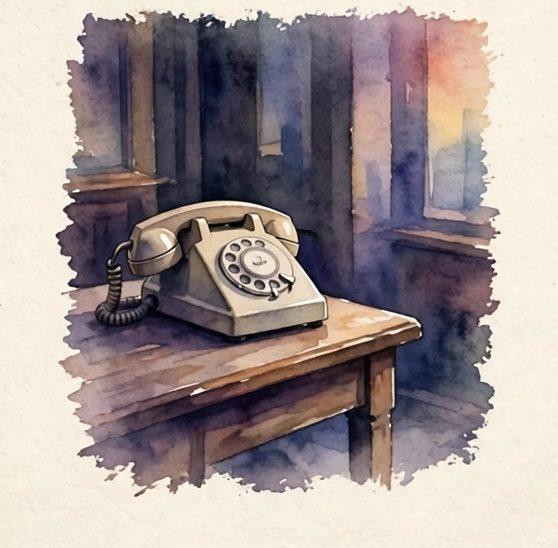
An old rotary telephone on a hall table, evening light along the wall.
The unchosen hall begins with a sound. The telephone rang — in the hall, in the kitchen, in the small hours or the respectable ones — and the person answered it as one answers telephones, in the middle of a sentence about something else, with the kettle in mind and one shoe off. The voice at the other end was known, or official, or both. What it said belongs to the sentence room, further back. This room keeps the ringing: the last ordinary sound of the before life, arriving, as fate usually arrives, by wire and without an appointment.
Afterward, the telephone itself is changed for the person, the way the coat was changed, the way the room was. It sits on its table conducting its usual business — bills, invitations, the ordinary static of a life — and every ring is tried, briefly, against the memory of the one that mattered. The book records the flinching without comment and without cure. Instruments are innocent. A bell is a bell. It is the ear that has been reeducated, and the reeducation, the keeper notes, fades at its own pace, like everything else honest in this building.
The house keeps one instruction for this room, and it is addressed to the future, which is unusual for a book of records. It reads: answer the telephone anyway. The entries all show a life that had to go on being reachable — by children, by friends, by the ordinary mercy of other people's news, most of it kind, much of it merely news. The person learned to pick up the instrument without bargaining with it first. That learning is the after self's quiet credential, and the book underlines its date too, in a smaller hand, beside the day itself.
38The Day the Letter Came
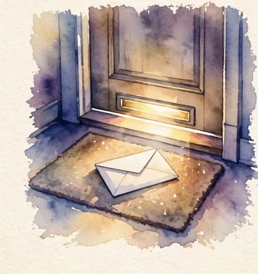
A letter lying on a doormat just inside a door, light falling through the letterbox.
Of the unchosen instruments, the letter is the slowest and therefore, in many entries, the most merciful. It was written before the day, posted before the day, and traveled toward the person at the speed of the mails while the before life went on eating its breakfasts in complete innocence of the envelope. The book always records the postmark where it can be read. It is the entry's way of noting that the border was crossed in transit, days before the door opened — that the after had begun, officially, while the before was still making tea.
The letter waited, in the entries, with the patience of paper. On a mat. In a box. In a pile of circulars and bills, camouflaged by junk. Some were opened at the table with a knife, in the belief that they were ordinary. Some were known at once, by the handwriting or the stamp or the weight, and were carried around the house for hours — into the garden, back to the hall — like a guest the host is not yet able to receive. The book records the carrying as part of the day. The border, in these entries, is measured in hours of unopened envelope.
People keep the letter. This is the most consistent fact in the unchosen hall, and the keeper states it without attempting to explain it. Long after the telephone's ring has faded from the ear, the envelope is in a drawer, in a box, in the back of the day book itself — kept through moves and clear-outs that discarded furniture, photographs, whole wardrobes. The book understands the keeping as it understands the coat: not superstition, but custody. The letter is the day's body. Everything else about the day is testimony. The envelope, and what it held, is the thing itself, and things themselves are kept.
39The Day I Heard the News
Not all the unchosen days arrived addressed to the person. Some arrived addressed to everyone: news in the public sense, spoken by a radio, a screen, a stranger in a street — the kind of sentence that crosses a whole country's breakfasts at once. The book enters these days with the same care as the private ones, because the border, in the entries, runs through the same place in every case: not through the event, but through the hearing of it. The world changed at the speed of history. The person changed at the speed of understanding, which is slower and entirely private.
What people remember of such days, the book finds, is never the news itself first. It is the setting of the hearing: the room, the errand interrupted, the voice that said it, the exact patch of pavement. The news belongs to history and history keeps its own books, in capitals. This book keeps the smaller record: where a particular person was standing when the large world reached their particular life, and what they did with their hands in the minute afterward. Set down a cup. Held a railing. Went on peeling, because the peeling was there and the hands knew it.
These are the days a person shares with millions and can discuss with almost no one, because each hearer crossed in a different room. The book honors the solitude inside the shared event. It does not merge the entries into a national page. Each hearing is entered separately, in its own kitchen, its own street, its own light — and if two citizens of the same day ever meet at the desk, comparing settings like travelers comparing weather on the same road, the keeper lets them talk as long as they like. The hall has benches for exactly this.
40The Day the Door Closed
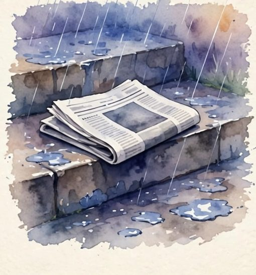
A newspaper folded on a step, unread, the rain beginning to spot its edges.
Some unchosen days have no voice and no envelope. They have a door. The person arrived at it as they had arrived a hundred times — with the key ready, with the day's plans arranged behind it — and found it closed in a new and final tense: locked, boarded, answered by a stranger, or opened by someone whose face delivered the whole sentence before a word was said. The book enters the door exactly as it enters the telephone and the letter: as an instrument. Doors close in this hall without malice. That is what makes them doors, and what makes them terrible.
The moment at the closed door is the purest border in the book, and the keeper treats it with corresponding plainness. On one side of the door: the whole before, with its key still warm in the hand. On the other: nothing yet — not even the after, which has not been built, only the draught in the corridor and the person's own breathing. The entries agree that the person stood there longer than the errand required. Standing at a closed door is the last ceremony of the before self, and the book allows it its full duration, unmeasured.
What the house refuses, in this room above all, is the silver lining, nailed up like a horseshoe over the lintel. No one at the desk will say the closing was for the best, or that another door was already opening, or that the person would someday be grateful. The record is kept cleaner than that. A door closed. The day turned. What the person built afterward was built afterward, with their own hands, in other rooms, and it does not owe the closed door a word of thanks. The keeper underlines the date, closes the book, and leaves the lintel bare.
41The Day I Was Told
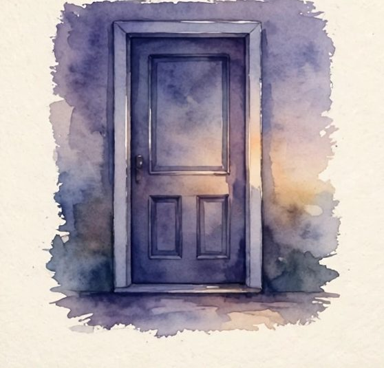
A door closed at dusk, the house gone quiet behind it
Being told is different from finding out. Finding out has edges a person can walk around, testing the shape of it alone. Being told arrives in a room, in a voice, at an hour that afterwards stays attached to the words like a stamp on an envelope. The day book has a whole class of days that begin this way: not with anything seen or done, but with a sentence spoken by someone who had carried it a while and could carry it no longer. The being-told is the event. Everything else that day is weather around it.
The house keeps these days in a plain hand, because the manner of the telling matters and should not be decorated. Who told it, and where they stood. Whether they sat down first or stayed by the door. Whether the sentence came whole or in pieces, with pauses where the teller looked at the floor. None of this is gossip; it is the record. A person can be someone at breakfast and someone else by the time the kettle boils after such a sentence, and the day book insists the change began at the telling, not at whatever the telling announced.
There is a courtesy the house extends to tellers, and it is recorded here so no visitor mistakes it. The person who brings the unchosen day is rarely its author. They are the door it came through, and a door is not blamed for the weather. Many keepers, in the first rawness, spend anger on the voice because the voice is present and the event is not. The day book's later pages usually correct the entry. The teller sat with the sentence before speaking it, and sat with it afterward, and their own day was changed by the carrying as well.
42The Day It Rained Anyway
The rain did not consult the day. This is the entry the house makes with a dry kind of tenderness, because every keeper remembers it: the worst day, or the best, and through all of it the weather doing its own ordinary work, indifferent as a cat. The rain fell on the just and the unjust alike that day, and also on the person standing with the letter in their hand, and it did not mean anything by falling. That meaninglessness is, in its way, a mercy the house returns to often.
It rained on the walk to wherever the news had to be carried. It rained during the telephone call and after it. It rained while supper was made by someone whose hands were doing an old task while their mind stood in a new country. And because it rained, the day has a sound in memory that the keeper can call back at will: rain on a window, rain on a coat, the particular smell of a wet street going about its evening. The unchosen day is kept in the senses, and the rain is often its preserver.
The house does not apologize for the rain, and it teaches the keeper not to resent it. A universe that stopped its weather for every underlined day would be a dishonest one, and harder to live in than this one. The rain that day was the world declining to pretend the day was the whole world. Life went on raining and working around the change, on the change's own street, in the change's own hour. Years later, keepers often find the rain almost companionable in the record. It was there. It stayed ordinary. So, eventually, did they.
43The Day Nobody Noticed
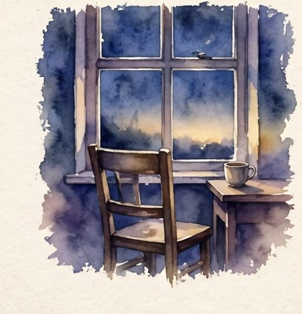
A chair facing a window in the evening, a cup gone cold beside it
Some underlined days pass in full view and are seen by no one. The keeper went to work, answered letters, ate supper, laughed once at something genuinely funny, and all the while was someone different from the person who had eaten breakfast. No colleague remarked on it. No friend telephoned with suspicion. The house keeps a respectful room for these days, because they disprove the idea that a change must be witnessed to be real. The day book underlines the date all the same, in the same pencil, with the same pressure.
There is a loneliness in it, and the house does not tidy the loneliness away. To have crossed a border and find the far side furnished exactly like the near side, with everyone behaving as though the map were unchanged, is a strange supper to eat alone. But there is also a privacy the keeper later comes to value. The change was theirs, entire and unborrowed, before it was ever a story. What is noticed late, or never, is not thereby diminished. The day book is a record, not an audience; it was written for the shelf, not the square.
Sometimes, years on, somebody says the sentence the day had been waiting for without knowing it. You were different after that winter, they say, or, I date you from then. The keeper feels the small click of the record being countersigned at last, and is surprised by how little it matters by then. The day never needed the signature. It is one of the house's steadier comforts: an unwitnessed change is still a change, a private border still a border, and the person who crossed it the only witness the day book has ever strictly required.
44The Day I Kept Working
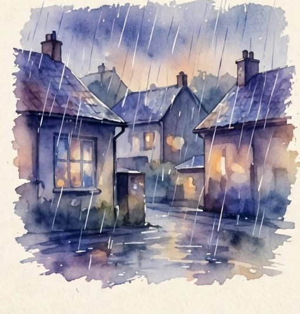
An ordinary street in the rain, water on the windows and the roofs
The house records, without surprise, how many underlined days contain a full day's work. The hands kept their trade while the person changed underneath it. Letters were answered in a level hand. The shop was opened, the accounts kept, the ordinary promises of the morning honored by someone who no longer quite lived in the life those promises were made in. This is not hypocrisy and the day book never enters it as such. Work is a handrail. On the day the ground moves, a person holds what is bolted down.
Afterward, the work of that day is often the strangest artifact in the record. A page written, a shelf built, a journey driven, all competently done by the after self on their first day in office, before they had been introduced to anyone, including themselves. Keepers reread such pages looking for the tremor and usually cannot find it. The sentence holds. The joint is true. The day book notes this with respect: competence is not a measure of what a day cost, and steadiness at the desk is not evidence that nothing happened.
There are also days, and the house is honest about them, when the work could not be kept. The hands stopped; the letter stayed open; the keeper sat in the new country of themselves with the tools down. These entries are not marked as failures in the day book. Kept work and unkept work are both only weather reports from inside the change. What the house records in either case is the same plain fact: a person was different by supper, and the day, worked or unworked, is underlined for the change and not for the performance.
45Unchosen Is Not Meaningless
The house is careful with this room, and opens it slowly. The unchosen day is not required to pay for itself. No keeper owes the record a lesson extracted from it, a gratitude performed over it, a bright edge discovered in it by Friday. The day book has seen too many such performances, entered in other people's hands at the foot of someone else's page: it made them stronger, it was all for the best. Those entries are not written here. What happened, happened; the house writes it down and leaves the margins wide.
And yet the room is not empty, and the house will not pretend it is. Unchosen is not meaningless, not because the day carried a hidden purpose, but because a person lived forward from it and living makes meaning the way walking makes a path: afterward, by use. The keeper who would never have chosen the day may still, in time, refuse to surrender what grew in its weather — not as the day's gift, for the day gave nothing, but as their own work on ground they did not pick. The distinction is kept in ink.
What the day did not take also belongs in this room, and the next room will inventory it; here it is enough to name the practice. When the keeper can bear it — not before — the day book turns a page and lists what remained standing on the evening of the unchosen day. The list is never offered as consolation and never totals up to an excuse for the day. It is a survey, that is all. A house described honestly: this wall fell, these walls stand, and the person who lives here now lives here differently, in full knowledge of both.
The Day Book Desk
One desk receives all correspondence for this house — questions, corrections, and word of any underlined date: a day chosen, a day that arrived unchosen, a before self remembered kindly, and how the after looks from here. It is read in the order it arrives.
46What the Day Did Not Take
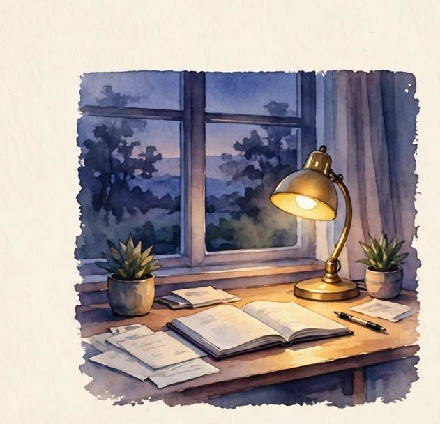
A desk where work goes on under a lamp while dusk fills the window
Every keeper, sooner or later, turns this page, and the house asks that it be turned without flinching and without boasting. What did the day not take. Not what it gave — the unchosen day gave nothing, and the previous room has settled that account. What it did not take is a different ledger, and an honest one. The hands still knew their trade on the evening of the day. The name still answered. Somebody's supper still mattered. The inventory begins in small denominations, because small denominations are what evenings are made of.
The list, when it is finally written, surprises most keepers by its ordinariness. The kettle. The friend who telephoned about nothing. The capacity to be annoyed by a dripping tap, which is to say the capacity to live at street level again. A humor not yet visible but evidently not destroyed, since it returns in the following weeks like a cat that was never really lost. None of these items cancels anything. They are not compensation. They are simply the part of the estate the day did not reach, recorded so the record is whole.
The house guards this inventory against two misreadings, and states both at the door. It is not a consolation list, to be produced when the keeper grieves, like a document proving the loss was smaller than it felt. And it is not a debt list, evidence that the keeper has no right to grieve since so much remains. It is a survey of standing walls. The person who lives in the house now is entitled to know exactly which rooms are theirs to use, and to use them without apology and without gratitude to the storm.
47The Evening of That Day
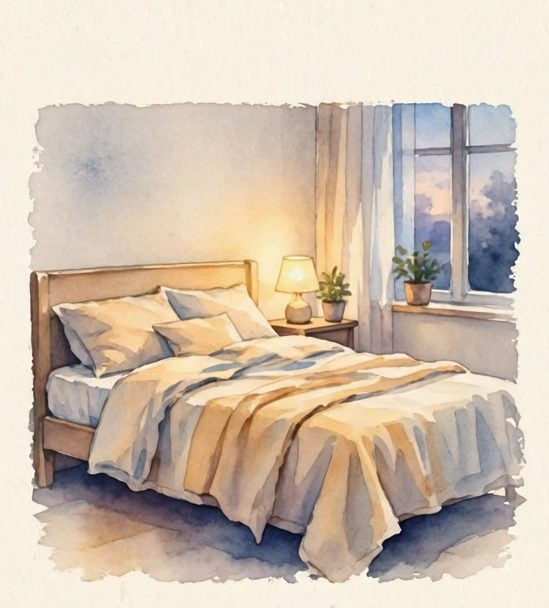
A bed made ready in a lamplit room, the first night in a new arrangement
The evening of that day deserves its own page, because evenings are where days are first believed. The morning belonged to the old arrangement; the afternoon to the event; but the evening belongs to the person who must now live in the house with the knowledge, among the familiar furniture, while the light goes down on a world whose map has been redrawn in one street. Supper is eaten, or attempted. Lamps are lit in the usual order. The house notes the strangeness of performing the usual order with unusual hands.
Keepers remember these evenings with a clarity out of proportion to their events, because almost nothing happens in them. That is their nature. The event is over; the living after it has not yet acquired habits. So the evening stretches: a cup washed with great attention, a window stood at, a letter begun and set aside, the ordinary sounds of the street arriving like news from a country the keeper used to live in and has, since breakfast, emigrated from. The day book enters the evening plainly and lets its plainness carry the weight.
Then there is the first night, which the house treats as the true border crossing, more than the moment of the day itself. To sleep, the keeper must set the day down; to wake is to find it still true in the morning light. Many keepers report the small shock of that waking as the actual instant of becoming: not the phone call, not the letter, but the first morning after, when the new self opens their eyes in the old room and understands that yesterday was not a dream the night was going to correct.
48The First Night as Someone Else
The first night as someone else is not always troubled, and the house corrects any keeper who expects a performance from it. Some sleep like the dead and wake ashamed of sleeping well, as though rest were disloyalty to the day. Some lie awake in an orderly fashion, reviewing. Some dream in the old life and wake twice — once into the dream's ending and once into the truth. The day book records all of these without ranking them. A night's weather is not a measure of a person's feeling, and never has been.
What the night does, in every account the house holds, is lengthen the day past its date. The underlined day refuses to end at midnight; it keeps the keeper company into the small hours and hands them over, eventually, to a morning that belongs to the after. This is why the house counts the first night inside the day's room rather than in the next day's. A border is not crossed in the instant of stepping over it. It is crossed when the traveler sleeps on the far side and wakes still there.
By the second morning the keeper performs the first acts of the new life without ceremony: water boiled, a coat taken down, a door opened onto a street that has not changed and is not the same. The day book does not underline the second day. It simply turns the page, in the same hand, and begins the after in the ordinary type it uses for everything true. The underlined date closes behind the keeper like a gate. Ahead of them, unmarked and unremarkable, the rest of the life is already going about its morning.
49The Person at Breakfast
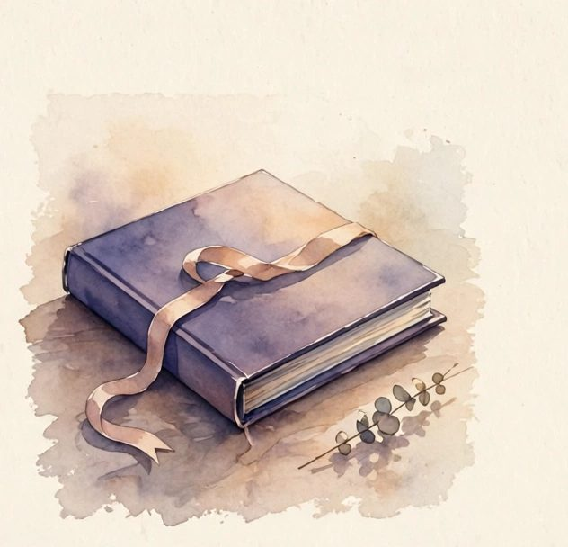
A closed photograph album on a table, a ribbon marking one of its pages
The before self enters the day book first as a person at a table. Not a symbol, not a warning, not a rough sketch of the keeper — a person, at breakfast, on an ordinary morning, with their own plans for the day and their own reasonable confidence in them. The house insists on beginning here, at the table, because everything said later about the before self depends on whether they were met as a person or as a preface. A preface can be skipped. A person at breakfast cannot, or not by anyone who intends to keep honest books.
They did not know, that morning, what the house now knows, and the record does not hold their not-knowing against them. They buttered their toast inside a life that felt continuous, because it was continuous, right up to the hour it was not. The keeper who writes this page has an advantage over them that is pure accident of position — having lived later — and the house treats that advantage the way decent people treat any unearned advantage: quietly, and without building a character on it. The person at breakfast was not naive. They were simply at breakfast.
So the before room is furnished from their side of the day. Their coat on its hook, their cup in its place, their plans in their own handwriting, which is also the keeper's handwriting and not quite. To visit the room properly, the keeper must resist tidying it into a lesson. The person at breakfast had a whole life, of which the underlined day was only the last page of one volume. The day book keeps the volume entire. It does not reduce anyone to the morning before their world changed.
50They Did Their Best
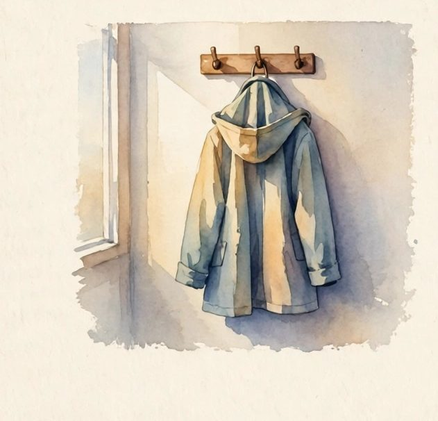
A younger coat kept on its hook by the door, in kind light
The house states it early in this hall so the rest can be read in its light: the before self did their best. Not a ceremonial best, polished for the record, and not the best imaginable by someone reviewing the evidence years later with a map the walker never had. Their actual best, with the knowledge in the house at the time, the strength in the house at the time, and the fears in the house at the time, which were also real furniture and took up real room. The day book will not have the entry amended.
It is a surprisingly difficult sentence to write about oneself, and the house knows why. The after self holds the minutes of the meeting at which everything became clear, and is tempted to send corrections back down the years: if only, why didn't you, how could you not see. The day book declines to carry such post. What the before self could see, they saw. What they attempted, they attempted in earnest, with the tools on their own table. A person is not graded against a future they were never issued.
There is a practical kindness inside the fairness, and the house points it out without insisting on it. A keeper who can write that the before self did their best has laid down the heaviest of the retrospective burdens, the one shaped like a judge's bench. What replaces it is not indulgence. It is accuracy, which is sterner and kinder at once. They did their best, and the day still came, and both facts stand in the record without either one excusing or accusing the other. The line is drawn there, and the hall walks on from it.
51Not a Draft, a Life
The before self was not a draft. The house puts the sentence at the top of the page because drafts are what writers throw away, and no life is thrown away. A draft exists for the sake of the final version; it has no standing of its own and no afternoons. The before self had standing and afternoons in plenty. They were not practicing to be the keeper. They were being themselves, completely, in a life that was not a rehearsal for anything, and which would have gone on being itself had the day never come.
Consider what the draft theory quietly steals. It takes the before self's joys and reclassifies them as foreshadowing, their griefs as preparation, their ordinary Tuesdays as raw material. Nothing in their life gets to be simply itself; everything is demoted to a step toward the keeper. The day book refuses the demotion. The before self's happiness was happiness, arrived at honestly and spent in full. Their mistakes were mistakes, not curriculum. A life that was lived in earnest is not made a draft by the arrival of a later volume.
So the house keeps the before self in the grammar of completion: they lived, in the past tense of a finished and entire thing, not the imperfect tense of a work interrupted. The after self continues the story, but continuation is not correction. No editor is waiting at the end of the day book to merge the two selves into a single approved text. They stand in the record as what they were: two people, successive tenants of one life, each complete in their own tenancy, each owed the dignity of not being the other's rough copy.
52What That Self Knew
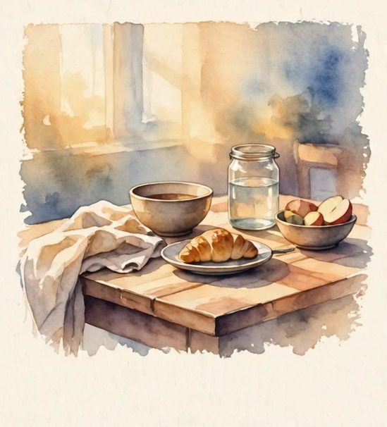
A shelf of ordinary things — a mug, a plant, a worn book — kept in good order
It is easy, from the after side of the day, to remember the before self mostly by their ignorance, and the house regards this as a failure of bookkeeping. The before self knew things. They knew their street and their trade and the names of their own fears, which they managed daily with a competence the record undersells. They knew how to be happy in specific ways the keeper has since lost the knack of, and how to bear specific sorrows the keeper no longer has to. Their knowledge was real knowledge, fitted exactly to the life it served.
They also knew the day was possible, more often than the keeper admits. Not its date, not its shape, but its possibility — the way everyone who has read a newspaper or buried a parent knows the species of day that redraws a life. Many before selves lived with a drawer already prepared, a will already made, a friend already chosen for the worst telephone call. The house honors the preparation where it finds it in the record. Being ready for a day is not the same as surviving it unchanged, and nobody promised it would be.
The keeper is invited, in this room, to consult the before self rather than merely commemorate them. What did they know about the house, the work, the people, that the after self, arriving in a hurry with new priorities, has mislaid. Old knowledge does not expire at the border. Some of it crosses duty-free and is more valuable on the far side than it ever was at home. A consultation costs an evening; a commemoration costs a wreath. The day book lists such knowledge among the estate's assets, in the before self's name, where the credit belongs.
53What That Self Could Not Know
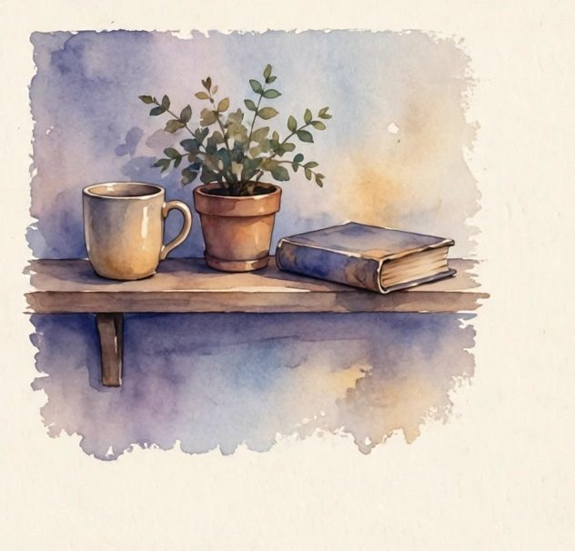
A mirror reflecting an empty, sunlit room, everything in its place
Against the before self's real knowledge, the house sets their real ignorance, and enters it without a trace of triumph. They could not know the date. They could not know the sentence, the letter, the name spoken in the doorway, or which ordinary morning was the last ordinary morning. They could not know how they themselves would behave on the day, which is the knowledge everyone most wants in advance and nobody is ever issued. The record does not call this innocence. It calls it the ordinary condition of being alive before the fact.
Nor could they know what the keeper knows best: that the day, however large, would not be the whole story. From the breakfast table, an underlined day looks like an ending, because the before self has no shelf yet for what comes after one. They could not know that supper would still be eaten, that the after would develop its own weather and its own jokes, that a person can stand in a redrawn life and find it, on a good morning, simply their life. That knowledge is the keeper's whole estate, and it was bought at their expense.
The house asks one thing of the keeper in this room, and asks it plainly. Do not make the before self carry the keeper's knowledge as though it had been available at the time, and do not make them carry the keeper's pity either. They stood where a person stands: before the fact, in full possession of a life and no possession at all of its sequel. There is no shame in the position. Every keeper in the day book occupied it once, at their own table, on their own last ordinary morning.
54Their Ordinary Happinesses
The before self had ordinary happinesses, and the house lists them with the same care it gives the underlined days, because a record that keeps only the great dates is a poor likeness of a life. Their happinesses were not grand and did not need to be. A breakfast that came out right. A piece of work finished and set down with a clean conscience. An evening with the lamps lit and nothing required. Weather they liked, arriving. These entries fill more pages of the day book than any crisis, which is as it should be.
It matters that they were happy without knowing what was coming, and the house will defend the point against a certain sophisticated sneer. Their happiness was not ignorance wearing a smile. It was the correct response to the life in front of them at the time, which was, at the time, a real life and not a waiting room. To say they were happy because they did not know is to let the day reach backward and tax every good hour that preceded it. The day book does not pay that tax. The hours were good. They remain good in the record.
Keepers sometimes flinch from these pages, feeling that to enjoy the memory of the before self's happiness is a disloyalty to the seriousness of what followed, or else a sorrow too large to hold. The house offers a plainer reading. The happinesses are evidence about the before self — that they could take pleasure properly, that their life was not a problem awaiting its solution — and they are evidence for the keeper too. A person whose past held real happiness owns proof, in their own hand, that happiness is a thing their life can hold.
55Do Not Mock the Earlier Photograph
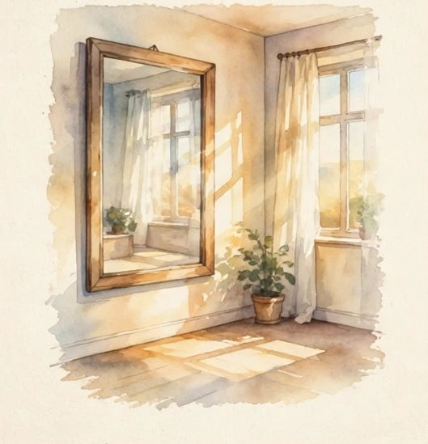
A photograph face-down on a table, its back to the light, unhandled
There is usually a photograph. The keeper knows the one: the before self at some table or doorway, wearing the old life easily, smiling with the confidence of a person whose map had no underlined dates on it. The house issues its only instruction about that photograph at the door of this room, and it is short. Do not mock it. Not the smile, not the clothes, not the plans visible in the posture. Mockery of the earlier photograph is the one cruelty the day book will not record, because it is cruelty toward the defenseless.
The defense is easily stated. The person in the photograph cannot answer, cannot update their position, cannot even know they are being laughed at across the years. And the laughter is never really about them. It is the after self performing sophistication, proving to an audience of one that they are no longer so easily fooled by life. The house finds the performance unnecessary. The keeper's present knowledge was not earned by being cleverer at breakfast. It arrived by post, like everyone else's, and would have fooled the person in the photograph exactly as it did.
Let the photograph be kept the way the house keeps everything in this hall: as a portrait of a person who was, at that shutter's instant, entirely and honorably themselves. If the keeper smiles at it, let the smile be the kind used for the young — known, fond, a little protective. That person carried the keeper to the threshold of the underlined day and handed them over intact. Whatever else is said in these rooms, the photograph gets the last courtesy: it is looked at kindly, and put back carefully.
56Gratitude Without Returning
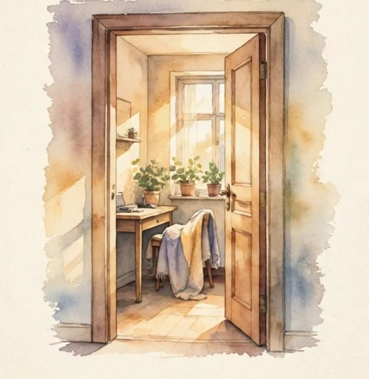
A doorway into a room kept exactly as it was, morning light across the floor
Gratitude to the before self is entered in the day book in a plain hand, without decoration, because decoration would make it suspect. Thank you for the years carried. Thank you for the strength husbanded, the friendships kept in repair, the work done honestly, the crises already survived before the one that gets the underline. The keeper who writes these lines is not being whimsical. They are acknowledging a transfer: everything the after self started with on the first morning was inherited, and the estate was in better order than it had any automatic right to be.
The gratitude has a boundary, and the house marks it as clearly as the thanks. Nobody is moving back in. The before room is kept, visited, honored — and not reoccupied. A keeper who tries to live in it again finds the coat does not fit the weather anymore, and the attempt helps neither tenant. Gratitude without returning is the exact posture this hall teaches: the face turned toward the before self in genuine thanks, the feet planted in the after, the border between the two kept crossable in memory and respected in fact.
It is worth saying, since the house says everything in this hall plainly, that the gratitude often arrives late and arrives awkwardly, years after a colder entry was written in the same book. The day book permits the correction. Earlier entries are not struck out; they are answered. A keeper may read their own old sentences about the before self — the impatience, the blame, the embarrassment — and write beneath them, in the later hand, the thanks that could not have been written then. The record is big enough for both, and truer for holding them.
57The Before Self Is Not an Enemy
It happens in some lives that the before self is quietly reclassified, over the years, as the enemy: the one who signed, who trusted, who walked through the door, who did not listen. Blame needs an address, and the before self is the only tenant of the past who cannot move out. The house disputes the classification at the door of this room. The before self is not an enemy. They are the keeper's predecessor, separated by a single day, and most of what looks like their fault is only their position — before — seen from after.
An enemy must be opposed, and a self opposed is a house divided in a way no evening settles. Keepers who declare war on the before self find the war unwinnable in the specific way of all civil wars: every victory is also a loss, since the territory fought over is one life. The day book proposes the older arrangement instead. Successors do not try their predecessors. They review the record, learn what the office cost the last holder, and govern themselves accordingly, with the respect due to someone who kept the seat warm through harder years than the eulogies mention.
This is not absolution, and the house is careful to keep it from softening into that. Where the before self did wrong — and the record, kept honestly, will have such pages — the wrong stands in its own name, neither excused by their ignorance nor enlarged into a character. But a wrong page is not an enemy either. It is an entry. The keeper closes this room with the posture the whole hall recommends: across the table from the before self, papers in order, no weapons on the cloth.
58What I Still Borrow from Them
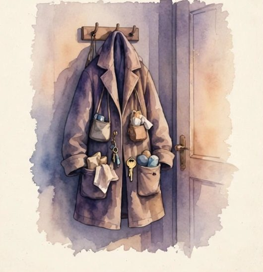
A coat left hanging by the door, small useful things still in its pockets
The keeper still borrows from the before self, and the day book, which loves an honest ledger, keeps the account. A skill of the hands learned in the old life and never improved on since. A recipe. A way of calming a room, or of being useful at a sickbed, or of finishing a piece of work when finishing had stopped being pleasant. These were the before self's property, developed in their years, and the after self draws on the account weekly without always noticing whose name is on it. The house notices, and credits them.
Some borrowings surprise the borrower. In a new situation, under new weather, the keeper hears the before self's sentence come out of their own mouth — a saying, a standard, a refusal — and recognizes the voice the way one recognizes a coat taken down in the dark and put on by habit. This is not the old self returning to govern. It is an inheritance being spent. The day book distinguishes the two carefully: the before self does not rule the after, but their tools remain in the workshop, oiled, and there is no rule that good tools be discarded for being old.
The house suggests, mildly, that the borrowing be acknowledged now and then, if only in the record. Not as ceremony — the before self has no use for ceremony — but as bookkeeping. A keeper who knows what they still draw on is less likely to make the two vulgar errors: pretending the after was built from nothing, or pretending nothing of value survived the day. Both pretenses fail at the first audit. The truth is simpler and stands up in any light: the present life runs partly on capital the past life saved.
59The Coat They Left Hanging
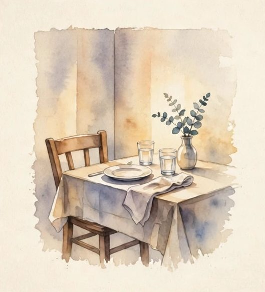
A chair drawn up to a table in the before room, a place still set for one
In many keepers' houses there is literally a coat: the before self's coat, still hanging by the door long after its weather has passed. The house uses it here as the emblem of everything kept past its use — the clothes, the subscriptions, the opinions worn like outerwear, the appointments the old life made and the new life keeps out of momentum. The coat is not mocked in this room either. It was a good coat. It kept someone warm through real winters, and its pockets, checked years later, still hold the small change of a former life.
Why is it kept. Partly tenderness, partly the reasonable suspicion that weather turns. Partly because removing it feels like a verdict, and the keeper has already handed down enough verdicts for one lifetime. The day book does not instruct anyone to clear the hook. It observes only that the coat's keeping is a decision, renewed each season it hangs there, and that a decision known to be a decision sits lighter on the house than one disguised as fate. Hung knowingly, the coat is a keepsake. Hung unexamined, it is a claim the past still has on the hall.
The pockets deserve their sentence in the record, because keepers report them with such consistency: a ticket stub, a list in the old handwriting, a key whose lock nobody now can identify. The day book advises that these be received the way archaeologists receive small finds — not as messages, not as omens, but as evidence of a person going about a day with errands. The before self had errands. The coat carried the proof against its back all these years, patient as furniture, and asks nothing for the service.
60Visiting the Before Room
The before room can be visited, and the house keeps visiting hours. Not the whole day — the after has its own claims — and not never, which is a kind of superstition. The keeper goes in sometimes: reads the old pages, stands at the window the before self stood at, checks that the room is as it was. Visiting is a practice the day book recommends in moderation, the way one keeps up a family grave or a former street: not to live there, and not to let the grass win either. Both selves, the house maintains, are better for the visits.
A good visit has a shape, and the hall describes it for whoever needs it. Enter without an errand. Do not go in hunting for the moment it all went wrong, or for the moment it was all still right; the room is tired of being evidence in both trials. Go in as one goes into the room of someone known a long time: to look around kindly, to remember exactly, to leave the furniture as found. The keeper who can visit this way has made the peace this whole hall exists to describe, whether or not they have noticed making it.
Then the visit ends, because visits do, and the keeper comes back through the doorway into the after, where supper is waiting and the lamps are lit in the present tense. Supper, after all, belongs to the living day. The door is not locked behind them. That is the last thing this hall says about the before self: the door is not locked, the room is kept, the person who lived there is honored in the record — and the keeper's life is lived, by their own full choice, on the after side of it.
The Day Book Desk
One desk receives all correspondence for this house — questions, corrections, and word of any underlined date: a day chosen, a day that arrived unchosen, a before self remembered kindly, and how the after looks from here. It is read in the order it arrives.
61The Person at Supper
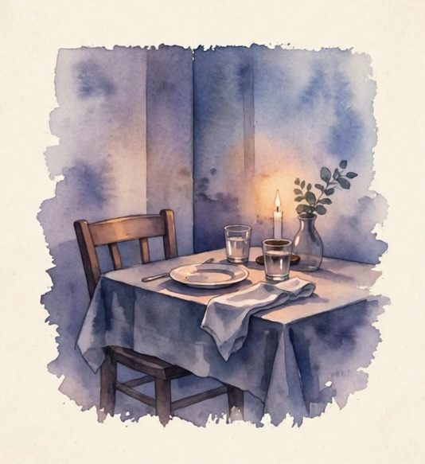
A supper table set for one in evening light — the same table as breakfast, the light changed.
The day book has two entries for most days and both are plain. Whoever sat down to breakfast is described without ceremony: what they expected, what they were saving for later, the small plans laid out beside the plate. The supper entry is shorter, as supper entries usually are. It does not describe a stranger. It describes the same chair occupied by someone who has been somewhere the morning did not include, and who now eats more slowly, or faster, or with one less thing to prove. The keeper writes both entries in the same hand. That is the house's first whole doctrine: the record does not change handwriting at the border.
It is tempting to ask which of the two sittings holds the real person, and the day book refuses the question every time it is brought to the desk. The breakfast self was not a rehearsal and the supper self is not a performance arranged to impress the evening. Each was complete at the hour it sat down. What differs between them is information, arranged into a life. The person at supper knows one thing more, or one thing less, or the same things in a new order, and knowledge of that weight changes how a hand reaches for the bread. The keeper underlines nothing in this entry; the change of light does the underlining.
So the person at supper is met on the same terms as the person at breakfast: fed, recorded, and believed. If they laugh differently, the laugh is entered without an inquiry. If they are quiet, the quiet is given its line on the page and no one leans across the border to ask the morning what went wrong. Supper is not a debriefing. It is the second sitting of a life that happened to turn between meals, and the house keeps the table set for whoever arrives at it, morning or evening, without checking their credentials against the earlier seating. Both sittings are theirs.
62New Weather in the Same House
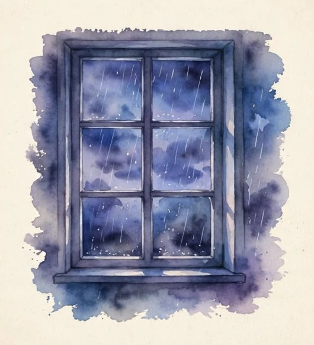
The same house window seen at dusk, new weather inside.
The house does not move when its weather changes. The same windows take the dusk, the same rooms hold their corners, the kettle stands where it stood at breakfast — and yet anyone returning at evening would say the air inside is different, the way a harbor town is different when the wind has gone round to another quarter. The day book enters weather alongside dates for this reason. A life is a climate before it is a plot, and the underlined day is often the day the climate turned: not a new country, a new sky over the same fields. The address is unchanged.
This is why visitors sometimes miss the change entirely, and why their missing it proves nothing. They look for moved furniture, for a different name on the door, for weather they can point at. The new weather is in smaller instruments: the barometer of appetite, the direction of sleep, which window the thoughts gather at. The keeper reads these the way farmers read a sky, without drama and without doubt. A house is known by its microclimates — the cold stair, the warm corner — and a self is known the same way, room by room, season by season. Nothing in the entry apologizes for being hard to see.
The practical counsel of this room is modest: learn the new weather before judging the house. Give the climate a few evenings to declare itself. Some days after the turn are only the sky clearing its throat; some are the first true days of a long season. The keeper has watched both and misjudged both, and the day book keeps the corrections in the same ink as the entries, which is the house's way of staying honest. Weather is not a verdict on the building. It is what the building is currently for. The rain gauge is kept by the door.
63What Changed First
Asked what changed first, most keepers of a turned life point to something smaller than the story usually allows. Not the address, not the name, not the grand arrangement — a handwriting, a route to work, the hour of waking. The day book honors the order in which things actually moved, because the first change is often the hinge the whole door quietly swung on. It is entered without enlargement. The first domino is not required to be impressive; it is only required to be first, and to be recorded before the later, louder changes talk over it. First is a fact, not a compliment.
Often the first change is invisible from the street and barely visible from inside: a word stops being used, a flinch goes missing, a plan that used to be guarded is mentioned at breakfast like weather. The before self would notice at once, which is why these entries are sometimes the hardest to write — the after self must describe a difference only the earlier tenant could measure. The keeper's method is plain. Set the two days side by side, morning against morning, and read down the small print until something fails to match. There it is. Underline it lightly.
Nothing in this room argues that the first change caused all the rest. The day book is a record, not a mechanism, and it distrusts tidy machinery in a life. The first change may have been the cause, or the crack the cause traveled through, or merely the first place the light showed. The house leaves all three readings open on the page. What matters is the order of the evidence: before the speeches and the suitcases and the signatures, something small had already turned, like a key in a lock nobody heard, and the record keeps it small.
64What Changed Slowly
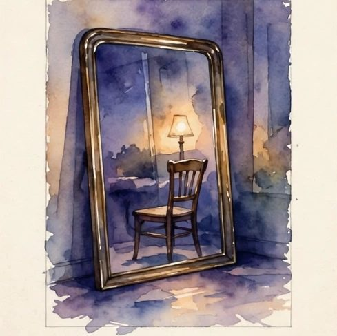
A mirror at evening, reflecting lamplight and an empty chair.
If the first change arrives like a key turning, the slow changes arrive like damp: no day can be pointed to, and yet the wall is marked. The day book gives them a column of their own because they are the easiest to leave out of the story, and a story without them lies by tidiness. A temper lengthens over two winters. A grief loosens its hold finger by finger across a year of ordinary Tuesdays. Nobody underlines a Tuesday, and yet the Tuesdays are where most of a life actually changes its mind. The book keeps them anyway.
The slow changes also explain why the chosen date is a handle and not a photograph. A person who underlines one day is not claiming the tide turned at noon; they are putting a marker where the waterline became impossible to ignore. The keeper defends the marker against two kinds of pedantry: the visitor who says nothing really happened that day, and the visitor who says everything did. Both want the record simpler than a life. The slow column is the house's answer to both — a long, patient list of almost-nothings adding up to a someone.
There is a particular dignity in the slow column, and the house asks visitors to notice it. Anyone can dramatize a door slamming. It takes a steadier honesty to record that the door, in fact, drifted shut over eleven months, and that the person on the near side of it cooperated sometimes and resisted sometimes and mostly just lived, meals and letters and weather, while the angle narrowed. The after self is largely built at this pace. The supper portrait may hang in the front hall, but the slow column is the workshop where it was made.
65What Did Not Change
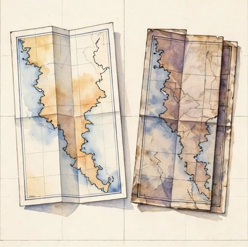
A new map, folded, its coastlines bare of words, beside an old familiar one.
Every honest day book keeps this page, and the keeper insists it is not the dull one. Underneath the underlined date, in the same steady hand, runs the inventory of what the day did not touch: the way tea is taken, the way old jokes still land, the loyalty that never even considered resigning, the handwriting in the margin. These are not leftovers. They are the load-bearing walls of the house, and the turn is only possible because they held. A life that changed everything would not be a life changed; it would be a different life entirely, and the book would have to close.
The page is entered proudly, and the house will explain why if asked. To say what did not change is not to diminish the day; it is to give the day its true size, which is large but not total. The after self stands on ground the before self laid, eats with the before self's hands, remembers with a memory the day did not replace. Visitors who skip this page leave with a cartoon: a door, a flash, a stranger. Visitors who read it leave with a person — altered at the border, continuous at the core.
There is also a kindness in the page, directed backward. The before self, reading over the after self's shoulder in the way of all former tenants, can find their own work still standing in the new arrangement: the friendships kept, the standards kept, the small decencies that turned out to be permanent. Nothing in this house is demolished for effect. What did not change is the proof that the person at supper is the person at breakfast, continued — the same house, the same table, the light doing what light does across a day. The keeper signs the page without rushing it.
66The Name Felt Different
It is a small entry and the keeper writes it without italics. Somewhere after the day, the person's own name began to arrive differently — the same letters, the same sound across a room, and yet the summons landed on someone it had not quite meant before. Not a new name; the house forbids the carnival of renaming. The old name, heard with new ears. People report it quietly, the way one reports a change in the taste of water at a familiar well. Nothing is wrong with the well. The drinker has been somewhere. The entry is believed.
The day book is careful here, because this is the point where storytellers reach for theater — the signature practiced in a new hand, the introduction delivered like an unveiling. The house declines. The name felt different is not a stage effect; it is closer to a shoe that has finished being broken in, noticed only because it no longer announces itself at every step. The name stops being a description the person is trying to match and becomes, simply, the word that calls them to supper. They answer it the same as ever. The difference is inside the answering.
In time, and the book is patient about time, the name settles over the after self the way weather settles over a house: completely, and without a ceremony anyone attended. Friends use it and hear nothing unusual, which the keeper counts as the sound of the thing finishing. Then one day the name is spoken in an old context — a schoolyard voice, a mother's tone preserved in a letter — and for a moment it belongs entirely to the person at breakfast, and the person at supper lets it visit without claiming it. Both answer to it. That is the settlement.
67A Stranger on Tuesdays
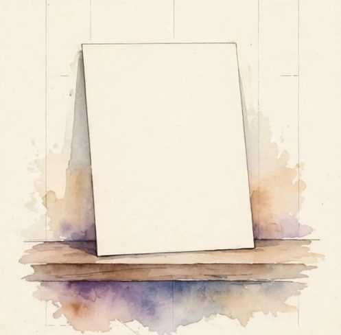
A blank card leaning on a shelf, waiting for a name.
The day book records, without alarm, that the after self is not met on all days equally. On most days the person at supper is a continuation so smooth that the border can hardly be found without the book. And then comes a Tuesday — it is very often a Tuesday, for reasons no keeper has explained — when the after self stands at a slight angle to the familiar rooms, and the house feels rented. A stranger has the run of the kitchen. The entry for such days is short and entirely free of panic.
Nothing has gone wrong on the stranger days, and the house is strict about this reading. The after self is newer than the furniture; of course there are afternoons when the arrangement has not yet learned its own habits, when the hand goes to the old cupboard out of a decade's loyalty and finds the cups moved. The strangeness is not the change failing. It is the change, still wet behind the ears, being caught in ordinary light. Even the before self had such days, the keeper notes — ask anyone who ever caught their reflection acting independently.
The counsel of the room is hospitality, of the plainest kind. Set a place for the stranger; they are staying. Do not cross-examine them at the table about when they intend to become familiar, and do not telephone the before self to ask whether this was in the lease. Tuesdays pass. The stranger learns where the cups are, learns it the way all tenants learn a house, by living in it badly and then less badly. One evening the book records, in the margin, that the stranger used the familiar mug without thinking. The keeper underlines it twice.
68The After Self Is Not a Costume
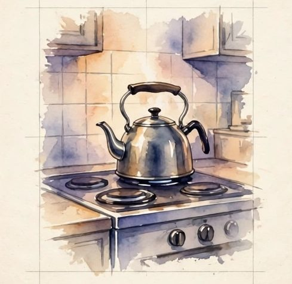
A kettle on a stove in a kitchen that feels both known and new.
A visitor at the desk will sometimes ask, in the tactful voice reserved for difficult subjects, whether the after self might be a performance — something put on for the new circumstances, to be hung up when the circumstances change. The day book answers without offense taken: no. A costume is judged by the mirror and removed in private. The after self persists in private, in the unobserved hours, at three in the morning among the ordinary worries. What continues unwatched is not a costume. It is a person, at home, off duty from being believed.
The test the house actually uses is duller than theater and harder to fake: the after self does the dishes of the new life. Intentions are announced in the front hall, but a self is proven in the scullery of the days — in what gets repeated when nobody is applauding, in which promises survive a tired Thursday. The keeper has seen performed changes, and they all share one symptom: they require an audience the way a fire requires air. The true after self has the opposite symptom. It would go on in an empty house, and does.
This room also carries a warning in the other direction, and the keeper enters it in the same ink. If the after self is not a costume, then it cannot be taken off for the comfort of people who preferred the earlier fitting. The before self's friends sometimes ask, kindly and not kindly, when the real one is coming back. The day book's answer is a door held open, not an apology: both are real, one is earlier. The person at supper is under no obligation to dress as breakfast for anybody's ease at the table. The house is firm on this point.
69Learning the New Map
Every after self is issued, without ceremony, a new map of the same country. The towns have kept their names and none of their distances. Routes that were a morning's habit are suddenly expeditions; places that were far and theoretical — the office of asking for help, the country of being alone at a festival — turn out to be a short walk from the new front door. The day book does not pretend the redrawing is anything but disorienting. A map is a promise the world makes to a traveler, and the after self has had its promises reissued mid-journey.
The learning is done street by street, and the book is firm about the pace. Nobody memorizes a country from the train window; the new map is learned the way the old one was, by errands — by getting the bread wrong twice, by discovering which bridge the grief crosses at and which it avoids, by finding the short way to the people who knew before and the shorter way to one's own company. Errors are entered in pencil, as all honest cartography is. The after self's mistakes with the map are not backsliding. They are surveying.
One day — and no, the house will not underline this one too, some days are allowed to stay ordinary — the after self gives directions to a stranger, or navigates a bad hour without unfolding the map at all, and the knowledge is simply there, resident. The country has become theirs by use. The keeper's note in the margin of such days is the smallest in the book: learned. Not conquered, not mastered, not explained in the newsletter. Learned, the way a language is learned by living in it, until the day the after self dreams in it.
70The Proof Nobody Asked For
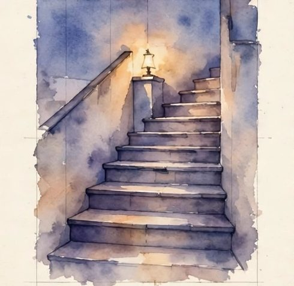
A staircase climbed at evening, a lamp lit at the top.
Sooner or later, usually in company, the after self is asked for its credentials — not in so many words, but in the small change of conversation: the surprise that they are coping, the compliment shaped like an inspection. The day book keeps a whole drawer of the correct response, which is none. A change of this kind issues no certificates and honors none presented at the door. The proof of the after self is not an exhibit. It is the accumulated, unphotogenic evidence of the days going on being lived by the person who now lives them.
The house is strict on one point here: nobody else's failure to notice is entered as evidence against the change. The register is full of days that remade a person while the street outside noticed nothing at all — no headline, no crowd, not even a remark at the bakery. The after self is real the way weather is real in a room with the curtains drawn: the instruments inside register it whether or not the neighbors have looked at their own windows. Belief, in this house, is not a quorum. One honest witness is enough, and the witness may be the book itself.
And yet the proof accumulates, quietly, in the manner of all true records. A year of suppers. The friend who stops mid-sentence and says the name the new way because the old way no longer fits their mouth. The photograph in which the after self is recognizable at a glance across a crowded mantelpiece of earlier faces. None of it was gathered for a tribunal; all of it would satisfy one. The keeper closes the drawer gently. The person at supper never applied for the position. They simply never left it. The drawer is not locked.
71Different, Not Finished
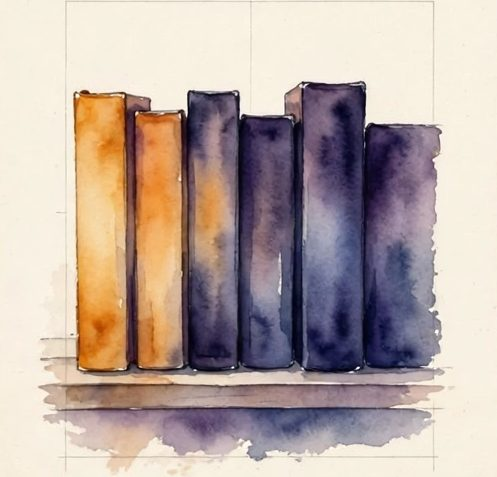
A row of day books on a shelf, their spines running from bright to dark.
The most common misunderstanding at the desk, the keeper reports, is the belief that the after self is a final edition. Visitors lean on the word different as if it were a full stop. The day book corrects them with the whole shelf: the after self of one underlined day becomes, in time, the before self of another, and the spine darkens accordingly. Different is a direction the life took at a border. It is not a plaque announcing that the building is complete and the scaffolding may be photographed for the brochure. There is no brochure.
This is entered as relief, mostly. A finished self would have to be defended against every subsequent day, and the defense would become the life. The unfinished one can simply continue — can be wrong about the map on Tuesday and right by winter, can hold the underlined day in honor without being required to live inside it forever. The after self is a working self: it keeps the rooms aired, it answers the door, it expects weather. The keeper has yet to meet a person who was done. The book has a page for the claim, and it is blank.
So the after self is allowed its own mornings of not knowing, its own slow columns, its own stranger days, without any of them being read as the border cracking. A border is not a wall that failed to hold; it is a line a life crossed while remaining a life. The person at supper will be someone else again, in some later book, on some later date that a future keeper will underline with the same steady hand. The house finds this not sad but accurate, and accuracy, here, is a form of respect.
72Several Days, Several Selves
Open the book of a long life and the underlined dates multiply, which the house regards as the normal state of the record. A person is not allotted one border like a visa. There is the day of the yes and the day of the letter, the day of the train and the day of the news at the door, and between them whole reigns of selves, each complete at its own supper table, each succeeded without a coup. The keeper enters them all in the same hand and declines to rank them by drama.
This multiplicity is the quiet answer to an anxious question the desk hears often: if there were several days, was one of them the real one? The day book treats the question the way a librarian treats someone asking which of their children is the real child. All the underlined dates are true markers. Each ruled its stretch of the river honestly. A life is not diminished by having turned more than once; a river is not accused of inconstancy for having bends. The water is the same water. That is rather the point of a river.
The practical effect is a certain lightness at the desk. A visitor carrying one enormous day, heavy as a piano, can be shown the shelf: others have carried several, and the shelf bore them all without groaning, because each day only has to account for its own stretch. The person at this evening's supper is the current tenant, not the final one, and the rooms behind them are occupied by selves who are not rivals but ancestors. The book closes on them all with the same care, and leaves the remaining pages blank, ruled, and unalarmed.
73The Story Chose Its Day
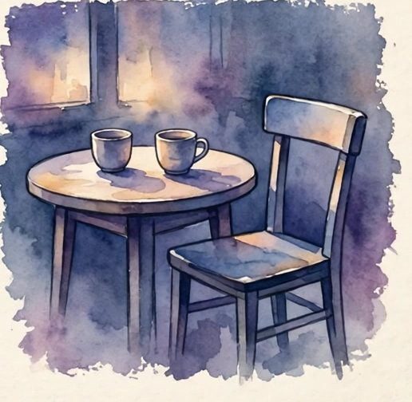
A table with two cups and one chair drawn close, a story being told in the evening.
When a life is told at a table, the story does not begin at the beginning; it begins at the day. Watch a teller at work and you can see the choosing happen in real time — the pause, the slight change of light in the voice, the date set down like a cup in its saucer. The day book's doctrine is that the story chooses as much as the teller does. A life is too long to carry whole into a conversation, so the story reaches for its handle: the one day that can stand, honestly, for the turning.
This is not fabrication, and the house guards the distinction with both hands. The chosen day really happened; the breakfast was eaten, the letter arrived, the train was caught or missed in actual weather. What the story adds is emphasis, the way a map adds a border in red ink that no traveler will find painted on the ground. Emphasis is not a lie told about the country. It is how a country becomes tellable at all. The day book enters the chosen day in full color and the surrounding years in the ordinary ink they were lived in.
Because the choosing is done by the story, tellers are sometimes surprised by their own first sentence. The day they had always named in private sits unchosen while the voice, wiser in the moment, picks another — smaller, drier, truer to the actual mechanics of the turn. The keeper counsels surrender in these cases. A story that has found its day should be allowed to keep it. The book can hold both dates, the private one and the told one, in adjacent entries, and frequently does. Neither is struck through. The record is roomy. There is space in the margin for both.
74Other Days Could Claim It
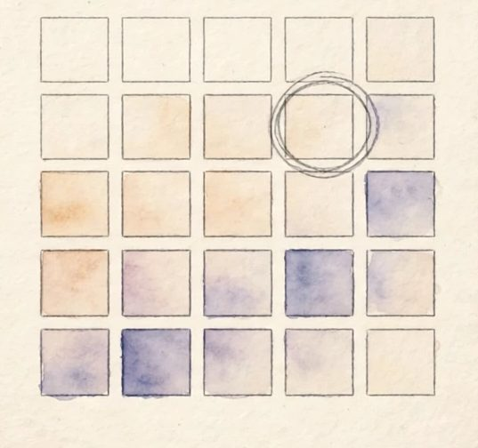
A date circled twice in pencil on a calendar page of blank squares.
For most turned lives, the chosen day has rivals, and the day book keeps their claims on file without embarrassment. The day of the actual decision, quiet and undramatic, done at a kitchen table with the radio on. The day the decision was announced, which has the better costume. The day, months earlier, when something in the weather of the person changed and no one, including the person, filed a report. Each could stand at the desk with documents in hand. The told day is simply the one the story, in its wisdom, reached for first.
The rivals are not errors, and this matters to the house. A visitor sometimes confesses, in the tone of someone returning a misdelivered letter, that they may have been telling the wrong day for years. The keeper receives the confession and files it under weather. The story picked its handle; the handle holds; the door still opens. If a teller one day switches their allegiance to a rival date, the book does not record a fraud corrected. It records a story that has changed its mind about where its own weight rests, which is allowed, being a story about a changing life.
What the rivals prove, taken together, is that the change was larger than any single date — a front moving through, not a stone dropped in a pond. The day book likes the proof. It keeps a life from being shrunk to an anecdote with good lighting. And it returns a measure of mercy to the teller: since several days could claim the turning, no day has to carry the whole indictment or the whole credit. The honor is shared across the calendar like lamplight across a table, and falls, in the end, on the life.
75Told at the Table
The natural habitat of the day is the table. Not the stage, not the page, not the interview with its lights — the table, where the cups are refilled without asking and the story is allowed its real length, with detours. Told at the table, the day recovers its proper size: neither the headline the strangers get nor the footnote it becomes in the teller's driest moods, but a day among days, remarkable and ordinary in the proportions they actually occurred. The day book was written at a table. It prefers its material in its native light.
Tables do something to a telling that no other furniture does: they feed the listener while it happens. A story told over soup is interrupted by soup, and the interruptions are part of the record the house trusts — the pause to pass the bread in the middle of the worst sentence, the laugh that arrives one course early and has to be set down like a hot dish. The day, served this way, cannot swell into a monument. It stays a meal among meals, which is the size at which the person who lived it can also sit down.
The listeners at a table are also different from an audience, and the day book notes the distinction carefully. They are not there to be impressed; they are there to be fed, and their questions come from the appetite rather than the gallery — what did the room look like, what did you do with your hands, did you sleep that night. Answered over a table, the day gives up its furniture, its weather, its small machinery, everything the staged versions leave in the wings. What reaches the record is a day a person can live in again. That is the test.
The Day Book Desk
One desk receives all correspondence for this house — questions, corrections, and word of any underlined date: a day chosen, a day that arrived unchosen, a before self remembered kindly, and how the after looks from here. It is read in the order it arrives.
76The Version I Tell Strangers
Two blank signposts at a crossroads, pointing different ways.
Every keeper of an underlined day maintains, whether they admit it or not, a version for strangers: shorter, drier, with the load-bearing details left standing and the interior rooms kept shut. It fits in the time between a question and a train. It names the date, the direction of the turn, and one fact for ballast, and it ends before the stranger's kindness has to be mobilized. The day book does not despise this version. A stranger has not earned the whole house, and the teller has not the whole evening. Courtesy cuts both ways.
The stranger version is not the lie, and the house is prepared to argue the point at length. A lie is built to mislead its listener about the shape of the thing. The short version misleads nobody; it simply declines to unfold the whole map in a railway carriage. Every fact in it is a fact. The omissions are not traps but proportions — the same proportions a map keeps when it shows the roads and not the individual stones. A stranger who later becomes a friend will receive the longer version in due course, and will find the short one folded inside it, unaltered.
There is a skill in the short version, and the keeper respects it as a craft. It must be honest at reduced scale, kind to the questioner, and — hardest of all — finished: it must not leak. A version that trails off into significance invites rescue, and rescue by strangers is a currency the after self no longer trades in. So the sentences are built like good fences, plain and complete, with a gate that opens only from inside. The stranger leaves with the day in their pocket, the true shape of it, at a tenth of its size. Nothing is owed beyond that.
77The Version I Tell Myself
A ruled page with one passage folded under and pressed flat.
The version told to strangers has its counterpart, kept in a drawer of the day book where the light is different: the version the teller tells themselves, usually at night, usually in the middle of some unrelated errand of the mind. It is longer in the places the public version is short and strangely brief where the public one lingers. It keeps the weather. It keeps what the hands were doing. It keeps the sentence nobody else will ever be given, filed where it belongs — not as a secret, exactly, but as furniture of the inner room.
This version is not more true than the others, and the house resists that romance too. It is more complete in some counties and entirely unmapped in others, because the teller is the worst witness to certain stretches of their own day — the ones they spent braced, or numb, or performing competence for an empty room. The self-told version knows it, on its good nights. It leaves a margin wide enough for everything it cannot see, and the keeper enters the margin in the inventory as part of the document, not a defect of it.
What the self-told version is for, the day book says, is not judgment. The teller does not sit up with it to grade the day or the selves who crossed it. It is a fire kept in the inner room against cold evenings — the full warmth of the facts, unshared and unabridged, by which the person at supper can remember being the person at breakfast without an interpreter. When it is finally told aloud, years later, to the one listener who earned the whole house, it comes out almost exactly as kept. That is how the keeper knows the drawer worked.
78What I Leave Out
Every telling leaves something out, and the day book refuses to treat this as a scandal to be confessed. The omissions are of several kinds and only one of them is shame. There is the detail left out because it is somebody else's — the day was crowded with other people's interiors, and they did not consent to be furniture in the story. There is the detail left out because it is dull, which is a mercy to listeners. And there is the detail left out because it is still warm, and the teller is keeping it for the inner room.
The house's test for an omission is the same as its test for an addition: does it change the shape of the day for the listener, or only the size of it? Leaving out the name of the town changes the size. Leaving out that there was a letter changes the shape. The first is editing, and every honest teller edits. The second is carpentry on the load-bearing walls, and the day book's pencil stops at it. A story may be shorter than the day, narrower, told from one chair. It may not be built against the day's own architecture.
Some omissions, the keeper notes, are seasonal. What cannot be told in the first year is told easily in the tenth, not because the teller has grown braver but because the detail has cooled to the temperature of furniture. The book keeps a list of such deferred items in the back, undated, and crosses none of them out in advance. When their season comes they are told at the table like everything else, and the listeners, to their credit, rarely notice that a piece has been missing. The shape was true all along. It was the size that was still arriving.
79When the Day Is Asked About
A door ajar between two lamplit rooms, a speaker's side and a listener's side.
The question arrives in ordinary costume, usually: at a reunion, across a desk, from an old friend measuring the distance between then and now with their eyes. When did it change for you. The teller hears the door of the day book open somewhere behind the ribs, and the keeper's whole etiquette is contained in what happens next — not the answer, but the half-second before it, in which the teller decides which version the question has actually asked for, and how much of the house this particular asker is being invited to see.
There is no disgrace in the assessment, and the house strikes out any rule that says a true thing must be told whole to whoever asks. Questions have sizes, like coats. Some are asked with a whole evening behind them and some with a lift descending, and the teller who answers both at the same length is not more honest, only less literate. The day book's counsel is calibration, kindly done: give the answer the size of the asking, keep the shape at every size, and let the asker who wants the long version make the one unmistakable sign — they sit down.
Asked well, the day can still do its oldest work in a room: it gives the asker a handle for their own. The keeper has watched it happen at the desk more times than the book can count — the question asked about one life becoming, mid-answer, a measuring of another. Then the telling stops being a report and becomes a tool handed across the table. The teller who notices this speaks more plainly, not more grandly. The day was never a monument. On its best evenings it is a lamp carried into someone else's hallway, and carried back undimmed.
80When It Is Not Asked About
A pencil resting beside an underlined blank line in a margin.
The longer discipline, and the one this hall exists to honor, is the day that is never asked about. Most underlined days meet it. The world does not send a questionnaire after the border; friends have their own books to keep, strangers have their trains, and the day settles into the record unconsulted, doing its work in private like a root. The day book does not score this as neglect. A day does not need an audience to have happened, any more than the after self needs witnesses to be the one answering the door. Silence is not an erasure.
The temptation of the unasked day is to go knocking — to work the day into conversations it does not fit, to underline it aloud until the room agrees it mattered. The keeper's counsel is the dignity of the archive: a record kept is a record honored, whether or not it is exhibited. The teller may offer the day when the table genuinely calls for it; that is hospitality. But the day that has to audition has been misfiled by its own keeper. It belongs in the book, not in the shop window, and the book is patient.
Years later, sometimes, the question comes all at once and from an unexpected chair — a child of the family, an old friend at a sickbed, a stranger whose own day is near the surface and who asks like someone feeling for a door in the dark. Then the unasked day is taken down from the shelf and told at its full length, and it has lost nothing by waiting. The keeper underlines this in the margin, for the encouragement of quiet records everywhere: a day kept is not a day wasted. Some books are written for one reader, arriving late.
81The Date I Give
Asked for the date, most visitors to the day book give it quickly, the way one gives a name at a desk. It has the sound of something settled, a fact among facts, and in one sense it is: the day happened, on that date, under that weather. But the keeper, writing it into the register, knows what the quick answer covers. The date was chosen — not invented, chosen — from among several days that might have carried the honor, and it was chosen later, sometimes years later, when the life had arranged itself into a before and an after and needed a hinge to hang the arrangement on.
There is no dishonesty in this, and the house is careful to say so at the desk. Memory does not keep minutes; it keeps markers. A wedding date, a moving date, the date on a letter — these are handles cut to fit the hand. The date a visitor gives is the handle they actually use when they lift the story, and a handle is not a lie because the door is wider than the grip. What matters is that the date opens the right room. If it does — if saying it brings back the breakfast and the evening in their true order — then it is the true date, whatever the calendar's counsel might argue.
Some visitors apologize for the choosing, as if a committee should have ratified it. The keeper waves the apology away. Nobody else was keeping the book; the date was theirs to give. Others give a date with defiance, daring the desk to doubt it, and the desk does not doubt it, because doubt is not among its instruments. The register takes the date down in the visitor's own hand where possible, underlines it once, and lets the argument rest. A life is allowed to say: here is where I turn. The keeper only asks that the date be given plainly, without decoration — and that is the whole of the ceremony.
82A Handle, Not the Whole Door
An open window in a quiet room, the curtains moving in a light breeze, no one there.
The date is a handle, and this hall exists to keep anyone from mistaking it for the whole door. A door is wide: it has the morning on one side of it and years of slow weather on the other, the sentence overheard in June and the habit quietly abandoned in March. The handle is only the part the hand can hold. The house does not mock handles; without one, the door of the story could not be opened at all, and the life would be retold as weather — true, perhaps, but impossible to enter. It only asks that the handle be honored as a handle, made for opening, not worshipped as the entrance itself.
Visitors sometimes lean their whole weight on the date, and the keeper understands the leaning. If everything can be hung on one day, then the rest of the life is excused from examination, and there is rest in that. But the register's margins are full of the change that happened off the date: the courage gathered in the winter before, the grief that only ripened the spring after. The day is where the story turns; it is not where the turning was done. The slow work was spread across seasons, most of it unphotographed. The handle does not carry that weight, and was never asked to.
So the house teaches a small courtesy toward one's own past: name the day, and then allow the day to be smaller than the change. Say what the date is for — a grip, a marker, a place to begin the telling — and let the unmarked days keep their share of the truth. The before was not all prologue and the after was not all consequence. Some of the most decisive hours have no date at all and live in the book as weather notes. The keeper leaves room for them in the margins. A handle, held lightly, opens the door every time; clutched, it only hurts the hand.
83Telling It Without Trembling
A bare table with a glass of water and a day book closed, the telling kept plain.
There comes a telling — the house cannot say when, only that it tends to come — when the day can be narrated without the voice doing anything unusual. No trembling is not the same as no feeling. The keeper has heard the story told flat by people who wept over it the week before, and told brightly by people who will weep over it next month. The trembling belongs to certain seasons of the telling, not to the truth of the thing told. Its absence is not coldness and its presence is not weakness. Both are weather at the desk, and the register records neither as a grade.
What changes, when the telling steadies, is usually the teller's errand. Early on, the story is often told to be believed, or to be forgiven, or to be handed to someone else to carry for a while. Those are honest errands, and the house runs them all without complaint. Later, the story may be told simply because it happened and it is the teller's, the way a coat is described because it hangs by the door. Nothing needs to be decided by the listener. The day stands in the sentence the way furniture stands in a room — present, accounted for, no longer being moved.
Visitors sometimes fear the steady telling means the day has stopped mattering. The keeper offers the register's long evidence against the fear: the days that matter most are often the ones that can be set down level. A thing that must be carried carefully forever is not being carried well. To tell the day without trembling is to have found the shelf where it rests — not out of sight, not denied, just no longer in the arms. And if the voice shakes again some year — at an anniversary, in a certain light — the shelf is not a failure. The book opens and closes; the hand is allowed both.
84Telling It Plainly
The last skill of this hall is plainness, and the house ranks it above drama. A plain telling uses the words things actually had: the train, the letter, the signature, the rain. It does not promote the day into a parable or demote it into an anecdote. It says who was at breakfast, what was said or not said, and who was there by evening, and it lets the size of the change speak at its own volume. The keeper, who has heard ten thousand versions pass the desk, reports that the plain ones are the only ones that never need correcting later.
Plainness is not the enemy of tenderness in this house. The plainest sentence in the register — I was one person in the morning and another by supper — has made more visitors sit down quietly than any flourish. Decoration, by contrast, has a shelf life. The metaphor that thrilled at thirty embarrasses at fifty; the fate and destiny talk wears thin against the actual weather of the actual day. What survives is the record: the door, the hour, the sentence, the coat still hanging where it was left. Plain telling is how the day stays usable — a tool on the bench rather than a monument on a hill.
The house does not demand plainness of anyone on a first visit. Grief has its own rhetoric and so does joy, and both are received at the desk in whatever clothes they arrive in. Plainness is offered, not enforced — offered the way a chair is offered, for when the standing gets tiring. Most tellers find their way to it as the years sort the story's furniture, keeping what bears weight and letting the rest go to the attic of emphasis. What remains is short enough to say before the kettle boils and true enough to say at any age. The keeper enters it in the day book without a single underline wasted.
85The Second Day
The second morning: a table set again for one, the light a little kinder than the day before.
The day book gives the great day a whole hall, and then, with deliberate courtesy, it turns the page. The second day has no legend. Nobody underlines it, nobody asks about it at dinner, and yet it is the day the after actually began — not in declaration but in repetition, the new self doing again, at an ordinary hour, what the first day had only done once. The keeper honors the second day the way gardeners honor the second rain. The first proved the sky could open; the second proved the ground could take it. A change survived once is an event; survived twice, it begins to be a life.
The second day is usually harder in small ways and easier in large ones. The large ease is real: the door has been walked through, the sentence said, the letter answered, and the world did not end at any of the predicted addresses. The small hardness is also real: there is no audience now, no crisis to supply the courage, only the plain requirement to keep being the person the first day announced. Many transformations quietly expire on the second day, not from weakness but from lack of ceremony. The keeper's advice is to give the second day a little ceremony of one's own — the table set properly, the coat hung on the new hook.
Visitors who return to the desk years later rarely speak of the first day first. They speak of the morning after: what they made for breakfast in the new life, whether the hands shook, whether anybody telephoned. The register has learned to listen for these details, because they are where the after proves it can hold weight. A first day can be supplied by shock or by celebration; a second day must be supplied by the person themselves. So the house keeps a bench for the second day at the end of the hall, deliberately unmarked. Sit a moment, it seems to say. The border is behind you. This — this ordinary morning — is the country now.
86A Week as Someone Different
A week of evenings along a windowsill: seven lamps in a row, some lit and some not.
A week is the first honest measure of an after. Seven days is long enough for the new arrangements to meet the old week's furniture: the shopping, the laundry, the colleague's question, the quiet hour that used to be filled one way and must now be filled another. The keeper's register tracks the week of a change the way sailors track the week of a voyage — not for the storms, which announce themselves, but for the ordinary watches. Who cooked. Who telephoned. What time sleep came, and wearing whose thoughts. By the seventh evening the after has either begun to furnish itself or begun to send its things back across the border.
The week usually sorts the change into three piles, and the house names them without judgment. There is what holds without effort — the decisions that stay decided while the back is turned. There is what holds with effort, which is most of it, and is no disgrace: the new self, like any new tenant, spends its first week learning where the switches are. And there is what quietly reverts — the old name signed once by habit, the old road taken by the feet while the mind was elsewhere. The reversion is data, not verdict. The keeper enters it in pencil.
By the end of the week, most visitors report one surprise, and it is nearly always the same shape: the after is less theatrical than expected. Being someone different turns out to involve the same kettle, the same stairs, the same weather doing whatever it wants. What has changed is the tenancy, not the building. The house regards this as the week's great kindness. A change that demanded a different world would fail by Friday; a change that only asks for the same world, differently inhabited, can last. The register closes the week with a line the keeper uses often: the after, one week in, has stopped being news and started being address.
87When the Old Self Visits
The old self does not stay in the before room out of politeness. It visits. It arrives in a song's first bars, in a street that kept the old arrangement, in the hour of the evening when the former habits used to run the house. For a while — an hour, a weekend, once in a while a whole season — the visitor finds themselves answering to the old name in the old way, and the day book asks that this be recorded without panic. A visit is not a return in disguise. It is a relative at the door, and relatives are received.
The house distinguishes between a visit and a return, and the distinction is in the luggage. A visiting old self brings a coat for the evening; a returning one brings boxes. Most visits are the coat kind. The old self wants to see the new rooms, complain about the furniture, be fed, and tell its stories at the table it once owned. Let it. The keeper has never known hospitality to weaken a border. What weakens a border is fear of the knock — the pretending that the before has been demolished, when everyone in the house can see it standing across the path with its lights on.
When the visit ends, as visits do, there is usually a small audit at the door. What did the old self take away. What did it leave. Sometimes it leaves a tool the new life had forgotten it owned — a humor, a stubbornness, a recipe for getting through a winter. Sometimes it takes away a little of the new self's stiffness, having laughed at the right moment. The register enters the audit in a level hand. Then the coat goes back on its hook, the door closes without a speech, and the after resumes — not diminished by the company, and not required to pretend the company never came.
88Homesickness for Before
An old coat worn once more on a visit, hanging afterwards by the new door.
There is a homesickness that has nothing to do with houses. It arrives in the after, sometimes years in, at an unremarkable hour: a longing not for a place but for the person who used to live in one's own skin — their ease in rooms now effortful, their uncomplicated appetites, the way the world had not yet asked them the hard question. The keeper keeps a window open for this weather and refuses, point blank, to call it ingratitude. A person can be glad of the after and homesick for the before in the same breath, and the day book has columns for both.
Homesickness, the register observes, is an unreliable historian. It edits. It sends back the before with the light improved and the difficulties cropped out of the frame — the old self at breakfast, serene, in a kitchen from which the keeper has carefully removed the dread that actually seasoned those mornings. This is not lying; it is what longing does to a landscape, and it does it to countries as faithfully as to selves. The house's remedy is not argument but dosage: visit the before room, look at the whole photograph including its edges, and come back across the border before dark.
What the homesick heart usually wants, examined kindly, is not the old life. It wants one property of it — a lightness, a person, a version of the future that was still available then and has since been spent. Naming the property honestly is most of the relief the day book permits itself, since names are its trade. The lightness may be partly recoverable; the person may be telephoned; the unspent future is gone, and must be grieved as futures are, briefly and without theater. Then the border is crossed back in the ordinary way, on foot, carrying the groceries of the actual life.
89Glad, and Grieving
Two address books lying side by side, their ribbons resting in different places.
The day book has a column its visitors did not expect, and it is headed with two words that are usually kept apart. Glad, and grieving. The house insists on the comma and the conjunction both. A person whose day was chosen — the yes, the signature, the train willingly boarded — may still grieve the life that the choice closed, and the grieving does not retrospectively poison the choosing. A person whose day was unchosen may find, to their own alarm, a gladness growing in the after like light under a door, and the gladness does not betray the loss.
The world prefers its feelings sorted, one to a customer, and frequently sends inspectors. You cannot be glad, the inspectors say, look what it cost. You cannot grieve, they say, look what you gained. The keeper receives these inspectors politely and shows them the register, where the two columns run side by side down forty years of entries without once cancelling each other out. Feelings, in the day book's long observation, are not a budget in which one entry must be paid for by another. They are more like weather systems sharing a sky — the front does not apologize to the clearing.
Keeping both columns has a practical use, and the house is nothing if not practical. The gladness, admitted, stops leaking into guilt; the grief, admitted, stops leaking into sabotage of the after. What is written down in its own column tends to behave itself. Visitors are taught the small ceremony of the double entry: this I am glad of, said aloud; this I grieve, said aloud in the same sitting, neither permitted to interrupt the other. It takes four minutes. The keeper has timed it, because the day was long and the kettle was on, and four minutes of honesty have carried more weight in this house than many a year of sorting.
90People Who Knew Me Before
There are people who hold the copyright of the before. They knew the breakfast self — its jokes, its certainties, its way of entering a room — and their memory is a country the visitor no longer lives in but cannot be deported from. After the day, these people become archivists whether they applied for the post or not. Some keep the archive lovingly, producing the old stories at the right moments like photographs from a wallet. Others keep it like a border guard, checking the after self against the before papers and stamping nothing. The day book records both kinds without surprise.
The hardest sentence in this hall is one the keeper has heard in every accent: you have changed. Said as a welcome, it is a door opening. Said as an indictment, it is the same words doing different work, and the house teaches visitors to hear the difference before answering either. The before-knowers are not wrong about the facts — the change is real, that is the premise of the whole book. They are sometimes wrong about the meaning, mistaking succession for betrayal, as if the after self had done something to the before self in the night. Nobody did anything to anybody. It was a day.
What the house recommends, across the border of other people's memories, is patience with a spine. Let the old friends keep their archive; it is partly theirs, having been lived in their company. Correct the record where the record matters, and let the rest age in their keeping like wine in someone else's cellar. Some of them will cross over in time and come to know the after self on its own terms, and those crossings are among the happiest entries in the register. Some will not cross, and will be loved, henceforth, at the distance the border requires — which is also a way of keeping them, and the book has a column for that too.
The Day Book Desk
One desk receives all correspondence for this house — questions, corrections, and word of any underlined date: a day chosen, a day that arrived unchosen, a before self remembered kindly, and how the after looks from here. It is read in the order it arrives.
91People Who Only Know the After
One candle in a saucer on the after table, lit without ceremony.
And then there are the people met since — on the far side of the day, in the country of the after. They know only one self, and it is the current one, and their ignorance of the before is the most restful thing in the visitor's social world. To them the after self is not an after anything. It is simply the person, whole and unprefixed, and being known that way — without footnotes, without the archive — is a form of weather the before could never offer. The keeper watches visitors relax in this company like travelers who have set down a bag they forgot they were carrying.
Sooner or later, in the natural course of friendship, the day comes up. A photograph surfaces, a story requires a footnote, and the new friend learns that the person they know has a before — that there are whole rooms, a whole tenancy, on the other side of an underlined date. The house has observed the moment many times and reports that it is almost always kinder than feared. The new friend adjusts, the way one adjusts to learning a town had an older name. What they knew does not evaporate; it gains a cellar.
The keeper does keep one warning posted in this hall, addressed to the visitor and not the friend. The after-people are not a jury to be convinced, nor a confessional to be filled, nor an audience for the whole archive at one sitting. The day can be told to them the way it is told at the desk — plainly, once, at its true size — and then allowed to become part of the furniture of knowing someone, like a scar explained in a sentence and thereafter simply there. Friendship across an underlined date asks no more than that, and gives, in exchange, the cleanest mirror the house owns: a person seen only as they are.
92Known in Two Tenses
A bunch of flowers standing in a jar on the border path between two gardens.
To live long enough after the day is to become a person known in two tenses. The old friends hold the past tense: was. The new ones hold the present: is. The visitor walks between the two grammars like a bilingual citizen, translating at family dinners, correcting nothing, letting each table use the tense it has. The day book considers this a normal condition of a long life and declines to treat it as a split. A river is not split because its upper and lower reaches have different names.
The two tenses occasionally collide in one room, and the register treasures the entries. A wedding, a funeral, a reunion of the old regiment: the before-witnesses and the after-witnesses at one table, each describing someone the other would not quite recognize, both descriptions accurate to the evidence available. The visitor's task on such evenings is mostly traffic duty — introductions across the border, a sentence of context here, a mercy withheld there. It is not as tiring as it sounds. There is even a pleasure in it, the keeper notes: very few people get to attend, in person, the meeting of their own two countries.
What the visitor owes neither tense is an apology for the other. The before is not an embarrassment to be managed in front of the new friends, and the after is not a betrayal to be softened in front of the old ones. The day book's rule is simple custody: each tense is spoken of respectfully in the other's hearing. The person at breakfast is not traduced at supper's table; the person at supper is not explained away at breakfast's. Over years, the two tenses settle into one long sentence with a comma in it — and the comma, the keeper will tell anyone who asks, is the date.
93The Anniversary of the Day
The date comes round. It does so without permission and usually without announcement beyond the calendar's plain arithmetic, and the first anniversaries of the day are rarely neutral weather in the house. The body often knows before the mind does: a restlessness in the week the date lives in, a dream with the old furniture in it, the hand reaching for a telephone number half a decade gone. The keeper's register makes no fuss about any of this. Dates, having been given the job of carrying a life-turn, carry it in the body as well as the book.
Anniversaries sort themselves, over time, into kinds, and the house has identified three regulars at the desk. There is the anniversary that must be marked, loud with meaning, in the early years when the after is still proving itself. There is the anniversary that arrives like a letter from a respected acquaintance — noted, answered briefly, shelved. And there is the anniversary that passes entirely unnoticed until a week later, whose belated discovery the visitor reports with a complicated expression the register calls, simply, progress. None of the three is the correct one. The date is a servant, and servants may be given the day off.
What an anniversary asks, the keeper believes, is only acknowledgment — the difference between a knock answered and a knock ignored until it becomes a battering. A nod is enough in most years. Some years want more: a visit to a place, a name spoken, an hour given to the before room with the door closed. The house keeps no prescribed rite and regards all prescribed rites with the suspicion due to furniture salesmen. Mark it in the manner of the current year, at the size of the current need. Then close the book, blow out whatever candle the year required, and get on with the after — which is, after all, what the day was for.
94Marking It, Quietly
The border path at dusk, a gate standing open both ways between two gardens.
Of all the ways to mark the date, the house has come to trust the quiet ones. Not from any doctrine against noise — the register contains anniversaries involving brass bands of one kind or another — but from observation: the loud markings tend to be performed for an audience, and the day, of all things, was not. The quiet markings are done at the scale of one person. A walk by the old street without going in. A particular meal, cooked once a year in the old manner. A name said to the evening, without witnesses, the way one checks a lock — not from fear, but from habit that was once love.
Quiet marking has an economy the house admires. It costs nothing that must be recovered from anyone. It does not require the before-people to attend, the after-people to understand, or the calendar to be consulted about whether the feeling is proportionate. Proportionality is not consulted much in this house at all. A grief the size of a teaspoon gets its teaspoon of ceremony, and a gladness the size of a cathedral is permitted its walk around the building, so long as both are honest. The teaspoon and the cathedral, the keeper notes, have the same keeper.
Visitors sometimes ask the desk for instructions, a form, a correct observance in a sealed envelope. The keeper gives them the house's whole liturgy, which is this: notice the date, and do one true thing at its size. Light the candle or do not. Open the before room or walk past it whistling. Both are markings, if they are done on purpose. What the house does not recognize is the marking performed to prove the day has been defeated, or the day obeyed. The date is not an opponent and not a master. It is a line in a book that its keeper wrote, and quiet hands turn the page best.
95What the Day Cannot Explain
A house with both its rooms lit at evening, before and after under one roof.
Every house has its limit posted somewhere, and this one is posted at the end of the hall, in fair-sized letters. The day cannot explain the whole life. It explains a turn. It does not explain the temperament the turn landed in, the twenty years of weather that made the turn necessary, or the twenty after that decided what the turn would mean. Visitors are forever trying to promote the day into a theory of everything, because a theory is more portable than a life. The keeper declines the promotion paperwork weekly.
The register keeps a shelf of things the day has been wrongly billed for. A talent that predates it by decades, found in a school report. A stubbornness that was in the family before the family had an address. A kindness learned from a grandmother who never heard of the date and would have considered it a fuss. The after is not all consequence, any more than the before was all cause. Much of a life is simply itself, running on both sides of the border like a river under a bridge, and the day book does itself no favors by claiming the river.
Accepting the limit turns out to enlarge the day rather than shrink it. Freed of explaining everything, the day can be what it actually is: one true hinge, honestly hung. The life on either side of it regains its own weathers, its uncaused mornings, its changes that crept without dates and its constants that outlasted three underlined years without noticing them. The keeper's formulation, entered in the margin of the register's largest volume, is the one the house sends visitors home with from this hall: the day is the door, and the house is the house. Nobody lives in a door. One passes through it, gratefully or otherwise, into rooms that have their own names.
96The Border Stays Crossable in Memory
The hall of living after closes with the house's most merciful piece of geography. The border between before and after is a real border — it cannot be crossed in fact. The door of the day opens one way for living, and no amount of longing, money, or regret will post a guard who can be bribed. But in memory the border stays open at all hours, unguarded, and the gate has never once been locked. The house regards this not as a design flaw but as the whole point of having a border drawn in a book rather than in stone.
Crossing in memory is a different act from going back, and the register polices the vocabulary because the vocabulary protects the visitor. To visit the before in memory is to walk its rooms as a guest with a good coat — welcomed, fed, shown the photographs — and to come home across the path at evening by the ordinary laws of guests. To attempt return would be to demand the past resume its tenancy, which it cannot do, its lease having been honestly ended by the day. Visitors who learn the distinction stop fearing their own remembering. The memory is not a smuggler. It is a neighbor with a key to the garden gate, and the garden is the better for its visits.
So the border stands, in the day book's final account of it, as the kindest line in the house. It keeps the before from being lost and the after from being haunted — the two failures this hall was built, between them, to prevent. The keeper walks the path most evenings, professionally, the way lighthouse keepers in other stories climb their stairs, and reports the gate open, the lamps lit on both sides, the two countries at peace. Nothing crosses in fact. Everything may cross in memory. And the life, which owns both sides outright, sleeps the better for knowing exactly which kind of crossing is which.
97Step One: Choose the Day
A path to a door in early light, a closed day book held under a stone on the step.
The steps of this house are not a program, and the keeper says so before the first one, in case the staircase looks ambitious. They are twelve small acts of description, one to a step, and the first is the choosing of the day. Choose it the way the day book has taught throughout the halls: not the day the paperwork prefers, not the day the audience expects, but the day the story actually turns on — the breakfast and the evening that genuinely differ. If two days contend for the honor, choose the one you tell.
Choosing is an act of custody, and it should be done in a level hour. Not in the anniversary's weather, not in the first raw year when every date glows like a coal, but on an ordinary Tuesday of the soul, with the kettle on and the register open. Write the contenders in the margin if there are contenders. Cross out nothing in anger. The losing days are not liars; they are lesser handles, and they may keep their smaller truths in the footnotes where they belong. The chosen day is underlined once — once, the keeper insists, because a thing underlined three times is a thing being argued with.
A chosen day does a week of quiet work immediately. It gives the story a door handle. It gives the before and after their official names and relieves a hundred small changes of having to impersonate the great one. It gives the visitor something to point at when the inspectors of feelings arrive with their questions. And it gives the keeper, at the desk, a place to shelve the telling, in the long row of other people's chosen days, where it will be in good and unjudged company. That is all the first step promises. The step is small because the whole staircase is climbed at this size.
98Step Two: Say Who You Were at Breakfast
A pencil and a blank ruled page beside a cup on a breakfast table, the description not yet written.
The second step asks for a portrait, and the house is particular about its lighting. Say who you were at breakfast on the chosen day — not who you were in the era, not who you later became in the retelling, but the person at that table, with that morning's knowledge and that morning's plans, eating what they actually ate. The portrait should be taken from inside the morning, before anyone in it knew anything. Hindsight is asked to wait in the hall. It will have its turn on a later step, and it is not needed for this one, which is an act of fairness as much as memory.
Fairness, because the breakfast self is the one most often wronged by the story. Told badly, they become a warning in a coat — the fool who did not see it coming, the innocent who had it coming, the draft the evening corrected. The step requires the visitor to give them their full dimensions instead: their competence at their own life, their ordinary happinesses, the things they were right about that nobody lists. They did not know what the day held. Neither, the keeper notes dryly, did anyone else who has ever sat at that table, including the visitor doing the remembering.
Say it in the present tense if the sentence allows — the house has found the present tense to be a small machine for mercy. She is braiding her hair and worrying about the rent, not: she was a woman about to lose everything. He is proud of the garden and certain about the job, not: he was a man living on borrowed time. The borrowed-time version may be true from the evening's side of the border. It is not the breakfast portrait, and the step is the breakfast portrait, taken at breakfast's own hour, in breakfast's own light.
99Step Three: Say What Happened, in One Sentence
The third step is the staircase's narrowest, and most visitors have to breathe in to pass it. Say what happened on the day in one sentence. Not the meaning of it, not the verdict on it — the event, with its plain furniture: the phone rang, the letter came, I signed, I said no, the train left, the door closed. One sentence holds the door of the day at its true width. Everything the house has taught about handles applies here doubled: the sentence is not the change, it is the grip by which the change is carried into the telling.
Drafts of the sentence will run long, and the keeper expects them to and keeps a bin by the desk for the purpose. The long versions are not dishonest; they are merely carrying the luggage of twenty other rooms — the motives, the prequels, the grievances with third parties who had their own days elsewhere. The step asks that the luggage be set down for one sentence only. What happened. The sentence that survives the bin has a recognizable sound: it can be said to a stranger on a train without background, and the stranger will know exactly what kind of day it was.
Keep the sentence somewhere findable. The register recommends the flyleaf of the day book, in the keeper's own hand or the visitor's, dated not with the day it describes but with the day it was written — the sentence being an artifact of the after, and entitled to its own honesty about that. It will be revised. Sentences about great days are revised the way coastlines are, slowly and by weather, and the keeper asks only that revisions be entered in pencil and the earlier soundings left legible beneath. The sentence is a tool, not a tombstone. Tools are allowed to be resharpened.
100Step Four: Say Who You Were by Evening
A single underlined line on a ruled page, the pencil laid down beside it, the sentence kept.
The fourth step mirrors the second across the border of the day, and it should be taken standing in the evening's light. Say who you were by evening — not who you eventually became across the following years, which is a different and longer portrait, but the person who sat down to supper, or did not, on the far side of the chosen date. That person is closer to the event than the legend allows. They were usually tired. They had not yet become the story; they had only had the day.
The evening portrait asks for the same fairness the breakfast portrait received, in the opposite direction. The new self at supper was not yet wise about being new. They may have been frightened inside a chosen day, or strangely calm inside an unchosen one, or mostly concerned with whether there was anything in the house to eat — the register records all of these without adjusting the lighting. Later years tend to touch up the evening self into either a hero or a casualty of the day. The step requires the actual tenant: the one who locked the door that night in a new way, or the old way, with hands that had had a day.
Put the two portraits side by side when both are done — the house sets two chairs in this hall for the purpose — and observe the rule of the staircase. The difference between them is described, never graded. Not: the evening person knew more, though they did. Not: the breakfast person was happier, though they may have been. Simply: this one had not yet had the day; this one had. Between those two sentences the whole mystery of the house stands, unreduced. The keeper has watched visitors sit with the pair for an hour and say nothing, and counts those among the most successful sittings in the register.
101Step Five: Name What the Day Did Not Change
A supper table at the same hour as the morning's, the day complete, the light gone blue.
Halfway up the staircase the house turns the visitor around to face the constants. The fifth step: name what the day did not change. The list is always longer than expected, and its length is the step's whole comfort. The hands are the same hands, with the same competence in them. The laugh is the same laugh, arriving at the same jokes with the same disgraceful punctuality. The loves mostly persist; the dislikes certainly do; the way of making tea has survived revolutions that redrew every other map in the house.
Name them specifically, the keeper instructs, because generalities are where constants go to be doubted. Not: I was still the same underneath, which is a slogan, but: I still took the long way past the water; I still could not abide a meeting without an agenda; I still telephoned my sister on Sundays with the whole week's weather prepared. Specifics have the evidentiary force the step requires. A person who has listed twelve unchanged things in their own handwriting is difficult to persuade, afterward, that the day took everything. It took what it took. The list is the inventory of what it did not.
The constants are not consolation prizes, and the house is strict about this. They are the load-bearing walls of the after — the structure within which the new self could be furnished at all. A change that altered everything would have no tenant left to notice it. It is precisely because so much persisted that the difference can be seen, the way a border is only visible where the same river crosses it. The keeper enters the list in the day book in the same ink as the day itself. Constants, in this register, are not the absence of the story. They are its longest chapter.
102Step Six: Thank the Before Self, Plainly
The sixth step is a letter, and like all the house's letters it is short. Thank the before self, plainly. Plainly means without the flourishes that smuggle in a verdict — not thank you for your service, as if they were staff being dismissed; not forgive me, as if they were a creditor; but the simple acknowledgment due from one tenant of a life to the previous one, who kept the house standing and the accounts in order for the whole of their tenancy. They did. The register has never once recorded a before self who did nothing worth thanking.
The thanks should name its objects, following the house's standing rule that gratitude, like grief, behaves better when it is specific. Thank them for the friend they made whom the after still lunches with. Thank them for the skill in the hands, the money put by or the debts honestly carried, the child raised to the age of the day, the garden that the evening self inherited in better order than the morning self had found it. And thank them, if the day was a hard one and they stood anywhere near its blast, for the plain fact of having been the one who was there for it.
The letter is not sent anywhere, the day book being unclear on the postal arrangements across a border of this kind. It is read once, aloud if the room allows, and kept in the book at the page of the day, where future visits will find it doing its quiet work. Visitors report that the reading changes the temperature of the before room permanently — not warmer with sentiment, exactly, but better lit. The before self, thanked, stops rattling the door in the night seasons. Not because thanks was owed as a debt — the house has no debts in either direction — but because acknowledgment, like light, is something rooms are improved by having let in.
103Step Seven: Refuse the Word "Better"
A ruled page of lines with nothing crossed out, the refusal kept clean.
The seventh step is the staircase's landing, where the house has placed a single word in a frame, the way other houses display the fire regulations. The word is better. The step is to refuse it — not to ban it from the language, where it does honest work with soups and weather forecasts, but to refuse it jurisdiction over the border. Different is the day book's only adjective for the crossing itself. The visitor is asked to practice the refusal until it becomes reflex: not a better self by evening, not a worse one. A different one, full stop, at the size of the day.
The refusal is harder than it sounds, because the world keeps offering the word like a host offering a chair. You look better, say the kind friends, meaning the after suits you, and the compliment must be received graciously and translated silently. You were better before, say the others, and the insult must be translated by the same dictionary. Both sentences are grading a change the house only describes, and the register's rule is that grades from outside are entered in the margin, in pencil, under the heading of weather. The visitor's own hand, in ink, writes different.
What the refusal buys is the whole doctrine of the house in portable form. If the after is not better, it need not be defended as an improvement, and the before need not be pitied as the rough draft. If the after is not worse, it need not be mourned as a fall, and the before need not be gilded as the lost height. Both selves stand down from the comparison and take their seats as tenants, equal in dignity, different in tenancy. The keeper regards the seventh step as the one the staircase was built to reach, and has been known to say that the other eleven are, in a sense, its handrails.
104Step Eight: Let Both Selves Keep Their Rooms
Two chairs facing one another in kind light, nobody seated, the conversation implied.
The eighth step is the house's title deed, signed on the staircase. Let both selves keep their rooms. It means the before self is not evicted to make the after respectable, and the after self is not treated as a lodger in the before's house, tolerated at the real tenant's pleasure. Each keeps a room: furnished, lockable, with their name in the register in the same hand. The visitor does not have to divide the house by worth. Rooms are not allocated by merit in this establishment; they are allocated by having been lived in, which both selves, indisputably, have.
Practically, the step forbids two popular renovations. The first is the demolition of the before — the photographs destroyed, the old friends uninvited, the hometown struck from the record — usually undertaken to prove the after is serious. The second is the freezing of the before — the room kept as a shrine with the dust undisturbed, the after lived apologetically in the corridor. The keeper has inspected both renovations many times and condemned both. A shrine and a demolition are the same error in opposite coats: each denies one tenant their ordinary, livable room.
Keeping both rooms costs less than either renovation, which surprises visitors who expected the honest option to be the expensive one. It costs the occasional dusting of a room one rarely enters, and the courtesy of not apologizing for its furniture when the new friends tour the house. In exchange, the whole establishment gains the one quality the keeper prizes above tidiness: it can be believed. A house where both selves are housed can tell the day plainly, because nothing in it is hidden and nothing is on display. The register's shorthand for the eighth step, for those who like their doctrine portable, is simply: nobody here is homeless.
105Step Nine: Tell the Day Once, Plainly
The ninth step gathers the whole of the hall on telling into a single instruction, and it has two adverbs in it, both load-bearing. Tell the day once, plainly. Once, because the day is not improved by being told as a serial, in installments, to whoever will hold still; and plainly, because the plain version is the only one that will still be accurate at the distance of years. The keeper does not mean the day may only ever be spoken of a single time in a life — the desk would have no custom at all on that rule. It means: give it one whole telling, at its true size, and let that telling stand as the record.
The once-telling has an audience of one kind only: someone entitled to the whole of it. That may be a friend, a page, a professional stranger in another kind of house, or the keeper at this desk, who is paid in nothing and forgets professionally. What matters is that the telling be entire — the breakfast, the sentence, the evening, the unchanged list, both portraits — delivered in one sitting without the brakes that embarrassment applies. After that sitting, the day becomes a thing that has been told, and the difference between a told day and an untold one is the difference between a guest and a presence in the walls.
Later tellings, at dinners and to strangers, are then quotations, and may be as short as the company requires. The archive exists; the footnotes can be consulted; nobody has to carry the whole document on their back through every subsequent conversation. Visitors who complete the ninth step report a particular relief that the keeper has learned to recognize from across the room: the relief of a person whose story has stopped leaking. It stays where it was put. It can be visited, quoted, even laughed about in the right light — but it no longer seeps into every room of the house asking to be gone over again.
The Day Book Desk
One desk receives all correspondence for this house — questions, corrections, and word of any underlined date: a day chosen, a day that arrived unchosen, a before self remembered kindly, and how the after looks from here. It is read in the order it arrives.
106Step Ten: Mark the Date Lightly
An empty chair and a closed day book in lamplight, the day told once.
The tenth step returns to the date, which by now has been chosen, used, and told, and asks for the final adjustment of its weight. Mark the date lightly. Lightly is not carelessly; the house distinguishes them professionally. A light mark is one made with full knowledge and a relaxed hand — the anniversary noticed, the candle lit or not, the walk taken or not — where a careless mark is one made by someone pretending the date is not loaded, which fools nobody in the building, least of all the hand.
The register is full of heavy markings and their costs. The anniversary observed like a court date, with dread in the weeks of approach and a verdict required by midnight. The date defended like a frontier, so that no other day may be allowed its own importance. The date confessed annually to new audiences as if the telling were a tax. Heavy marks suit heavy years, and the house does not confiscate them. But a mark that never lightens becomes, in time, a second tenancy — the date living in the house as a landlord — and the tenth step exists to serve it notice, kindly, in writing.
A light mark, made yearly, has a recognizable style in the register: brief, private, and slightly amused at itself. The keeper's own entry, which visitors are sometimes permitted to see, runs to four words and a dash. It acknowledges the hinge, declines the ceremony, and turns the page. That is the destination of the whole staircase's work on the date — not forgetting, not festivity, but the date reduced to its true office: a mark in a book, made by the book's owner, in a hand that no longer shakes. The book, so kept, can be closed with one hand.
107Step Eleven: Expect Another Such Day
A small pencil tick beside an underlined line on a ruled page, nothing more.
The eleventh step looks up from the book, and some visitors find it the coldest draught on the staircase. Expect another such day. The house does not predict its weather — chosen or unchosen, glad or hard — and it offers no timetable, the keeper having no gift that way. It observes only that a life long enough to have one underlined date in it is a life demonstrably capable of turning, and that the capability does not retire. People who have become someone different once have learned the geography of turning itself. The knowledge stays in the legs, like the memory of a staircase in the dark.
Expecting is not bracing, and the step is careful with the difference. Bracing is a way of living in the doorway, and the house has already established that nobody lives in a door. Expecting, as the day book teaches it, is closer to good housekeeping: keeping the rooms in order, the thanks letters written reasonably promptly, the one-sentence habit maintained, so that if another day arrives — at breakfast, by telephone, by signature — the establishment is not found with its whole meaning invested in the current arrangement. It is readiness without alarm, and the register recommends it as the step's whole posture.
There is even, the keeper insists, a way to hold the eleventh step that is not grim. Another such day might be a chosen one — a door the visitor has been eyeing for years with increasing friendliness. The first day's great secret, available free at the desk, is that the after self is not a final self either. Different, not finished: the doctrine has a forward gear. To expect another day is to keep the windows of the after unlatched — not from fear of the weather, but from an informed respect for seasons, and from the memory, stored in the legs, that one has crossed a border before and lived in two countries, and can do it again.
108Step Twelve: Live the After Without Apology
The staircase ends, as the house intended, not with a ceremony but with an instruction for ordinary time. Live the after without apology. Apology, in the register's vocabulary, is the tribute paid to the idea that the change requires permission — the softening of the after in before-company, the explaining of it in after-company, the small cough before the sentence that says who one is now. The twelfth step retires the tribute. Not with defiance, which is tribute paid in the other currency, but with the plain administrative calm of a tenant whose name is on the register.
Living without apology has a texture visitors recognize once it is pointed out, the way one recognizes a tune. The date is mentioned when it is relevant and not when it is not. The before is spoken of with the thanks of the sixth step and the fairness of the second. The after is furnished without consulting the before's taste, and the before's rooms are kept without consulting the after's respectability. Nobody in the house is performing the change anymore. It is simply the address at which life is being lived, and the post arrives there without a forwarding order.
The keeper, discharging visitors at the top of the staircase, gives them the house's whole diploma in one sentence, and it is not framed. You were someone at breakfast and someone else by supper, and both of them were you, and the rest is housekeeping. Then the book is closed — not forever, the keeper being a realist about anniversaries and old selves, but for today — and the visitor goes down the path into the after, which turns out to be a country like any other: weather, work, supper, sleep. The border stays behind, crossable in memory. The day stays underlined. And the life, unapologized for, gets on with the long ordinary business of being inhabited.
109A Guide for the New Arrival
The house of before and after seen from across the road, one window gold and one window blue.
The Long View opens with the house's standing guide, written for the visitor who has only just acquired a day of their own and arrives at the desk still wearing it. The first thing the guide says is that the new arrival is not late. Days arrive at every age and in every season of a life, and the register's earliest entry and its latest are separated by some sixty years of birthdays. The second thing it says is that the new arrival is not required to understand the day yet. Understanding is a crop with a long season in this house; shelving comes first.
The guide's practical part is short enough to be printed on the bench. Choose the day when a level hour offers itself, not before. Take the two portraits when the light is fair. Keep the sentence to one sentence. Write the list of what did not change and keep it where the hard years can find it. Thank the before self in the manner of the sixth step, briefly and by name. And mark nothing heavily in the first year; the first year is allowed its weather without being asked to file reports on it.
The guide closes with the house's map of expectations, which surprises most new arrivals by its modesty. The after will not feel like a country for a while; it will feel like a room one is camping in. The before will visit, and is to be received as the hall of telling instructs. The date will come round, and may be marked at whatever size that year requires. And the day will, in time, take its shelf among the other days, no longer the largest object in the house — which the guide offers not as a loss but as the definition of the after having been properly furnished.
110Questions People Ask at the Desk
The Day Book Desk: a wooden desk with a day book, a lamp, and two inkwells.
The desk keeps a drawer of questions that arrive so regularly the keeper can hear them in the corridor. The commonest is: how long until it stops feeling strange. The keeper's answer is entered in the register's fairest hand: strange is not a condition to be timed but a season to be dressed for, and seasons in this house end by turning, not by deadline. Most visitors stop asking the question before it stops being applicable, which the keeper accepts as the closest thing to an answer the establishment owns.
The second question is whether the day must be told to everyone, or to anyone. The desk's ruling is in the ninth step and is repeated here for the corridor's benefit: once, plainly, to someone entitled; thereafter in quotations. Nobody is owed the whole archive by reason of curiosity, rank, or having known the before. The third question is whether the before may be telephoned, visited, written to — answered throughout the house in the affirmative, with the border's one condition: as a guest goes, and returns. The desk keeps a chair by that door, and it is rarely empty for long.
The last of the regular questions is the quietest, and is usually asked at the door, in the manner of someone asking after the weather in a country they are about to travel to. Will there be another day like it. The keeper gives the eleventh step's answer, undiluted: expect one, do not brace for one, and keep the house in the order the staircase taught. Then the drawer is shut, the kettle is offered, and the desk returns to its ordinary business — which is these questions, arriving daily, in new coats, from people who have just discovered that the house was built for them.
111Questions Skeptics Ask, Answered Carefully
The skeptics arrive at the desk in good faith and bad, and the house answers both kinds carefully, having learned that the questions are usually better than their manners. The first is always some form of: did anything actually happen on that day, or did you merely decide later that it had. The keeper's answer is the doctrine in its driest form. The date is a marker chosen afterward for a change that may have taken a season; the marker is true the way a milestone is true, and no milestone has ever claimed to have built the road.
The second question asks whether people really change at all, or only their circumstances wearing the person's name. The house concedes the skeptic his evidence — the unchanged list is long, the constants are real, the laugh arrives at the same jokes — and then produces the other column. The person who could not have signed now signs; the person who could not have stayed now stays. Change, in the register's usage, never meant a wholly different tenant conjured from the air; it meant a different arrangement of the same house, and arrangements are what lives are lived in.
The third skeptic asks, with genuine kindness sometimes, whether underlining a day does a person any good, or whether the whole book is a machine for self-importance. The keeper answers honestly: it depends on the hand. Heavy hands make idols of dates and grievances of borders, and the house has confiscated more than one day book gone that way. Light hands make a shelf, a handle, a hinge honestly hung — and the test the desk applies is the one from the tenth step: can the book be closed with one hand. The skeptic is then offered the bench, the view of the border at dusk, and the house's standing invitation to inspect the register, which has nothing in it that requires his belief.
112What a Visitor May Take Home
A visitor's bench on the border path at dusk, facing both gardens.
Visitors ask at the desk, on their way out, what they are allowed to take home, and the house keeps the answer posted because the question is a good one. They may take the date — theirs, chosen in the manner of the first step, underlined once. They may take the two portraits and the one sentence and the list of what did not change, which together constitute the house's whole luggage allowance, everything else being scenery. They may take the refusal of the word better, which weighs nothing and is checked by no authority at any border.
They may also take certain permissions, which the desk issues in triplicate without being asked twice. Permission to thank the before self without moving back in. Permission to be glad and grieving in the same sitting, in columns that do not cancel. Permission to tell the day once, plainly, and thereafter in quotations as short as the company requires. Permission to mark the date lightly, or in a heavy year heavily, without consulting the proportionality inspectors. And permission — the one most often pocketed at the door — to expect another such day without bracing for it, the way one expects weather in a country one knows.
What may not be taken home is also posted, in smaller letters and no less binding. No verdicts: the house issues none, on any life, including the visitor's own before. No rankings of days: one visitor's train is not another's letter, and the register does not keep a league table of turnings. And no one else's date — each book its own hinge, each hinge honestly hung or not hung at all. Visitors who leave with the allowance and without the contraband find, the keeper reports, that the luggage gets lighter every year it is carried, which cannot be said of most souvenirs.
113The Day Book in Ten Years
A key hanging on a hook between two doors, both doors at rest.
The house is sometimes asked to imagine its own register ten years on, and the keeper, who distrusts prophecy as a genre, answers only with housekeeping. In ten years the book will be heavier by the ordinary arithmetic: more days underlined by more visitors, the shelf lengthened, a few of the early entries' ink gone the color of weak tea. Some chosen days will have celebrated anniversaries so quietly that only the candle stub in the saucer knows. Some unchosen ones will have been joined, as unchosen days are, by further entries from the same addresses.
The keepers of it will have changed too, the house being honest about its own doctrine. Whoever sits at the desk in ten years will be someone different from the keeper who sits there now, by the action of days nobody underlined in the staff register — a sentence, a signature, a season. The house expects this and has written it into the duty roster as a feature. A day book kept by someone who had never turned would be a cabinet of other people's weather. The desk is best kept by a keeper who has crossed a border or two and kept the coat.
What will not have changed is posted at the door and is load-bearing: the rule that different is not a grade, the two portraits in their chairs, the gate on the border path kept swinging. Ten years of weather will have tested every one of those fittings, and the house is content to be judged by whether they hold. The keeper's private expectation — entered here because the register asked — is that they will hold, for the plain reason that they were never decorative. They were built, like the rest of the establishment, out of what the days actually did.
114Every Life Has Its Underlined Dates
The Long View widens at this point from the visitor's book to the street, and the prospect is the same in every direction. Every life has its underlined dates. Some are famous in their families — the emigration, the wedding, the year of the fire — and are retold at tables until the children can recite them. Some are so private that the person carrying them has never spoken the date aloud to another living soul, and the underlining exists only in the ink of one memory, in one hand, perfectly legible. The house makes no distinction of rank between them.
The universality is not offered as a comfort, exactly, though visitors often receive it as one. It is offered as a correction of scale. A person carrying an underlined date may feel singular — oddly revised by fortune, alone in the condition of having a before — and the register's forty shelves are the house's rebuttal. Having a before is the normal condition of anyone who has lived long enough to have had two weathers. The dates differ; the having does not. Entire streets are walking around with hinges in them, most of them invisible, all of them load-bearing.
There is a courtesy that follows from this hall, and the house commends it as the most useful thing in the Long View. Assume the hinge. Assume that the person across the desk, the counter, the border of any kind, became someone different on some date they could name in a held breath — and that the assuming changes how carefully one handles their archive. Not with pity: the doctrine forbids no one their dignity, and a hinge is not a misfortune unless the day made it one. With accuracy, rather — the way one handles any house in which both rooms are occupied.
115The Goal Is Not a Better Story
The house in ten years imagined, a vine grown over the door, both windows warm.
Near the end of the Long View the house posts its refusal, in the same fair letters as the limit. The goal is not a better story. It is an accurate one. The distinction has been the staircase's business since the seventh step, but it bears a whole room at the end, because the temptation it refuses is the most respectable temptation in the building: the temptation to edit the day into an improvement, the before into a husk, the after into a triumph, so that the whole thing can be carried into company like a trophy.
A better story, in the register's experience, is a worse record. It requires the breakfast self to shrink a little more at every telling, and the evening self to stand a little straighter, until after twenty years of revision the two portraits depict a fool and a sage who never met the actual people. The actual people were more interesting. They were ordinary at breakfast, in possession of an ordinary happiness and an ordinary dread, and they were tired by supper, in possession of a changed address for their life. Accuracy keeps them their size.
What the visitor is offered instead of a better story is a truer shelf. The day, told once and plainly, at its size; the before, thanked and fairly lit; the after, lived without apology; the date marked lightly in a hand that has stopped shaking. None of this makes a trophy. All of it makes a house that can be believed by its own tenant at three in the morning, which the keeper submits is the only audience that has never once been fooled by the trophy version. The goal is a story that does not need the visitor to be braver, sadder, or more improved than they were. Only different, and on the record.
116What the Keeper Does All Day
A long shelf of day books, their spines running from the brightest to the darkest.
Visitors picture the keeper's day as a series of dramatic interviews, and the house, which has the duty roster, corrects them with affection. Mostly, the keeper keeps. The day book is dusted, its rulings checked, the underlined dates gone over in the same pencil — never re-inked, the keeper holding that a date, once underlined, should keep the pressure of the hand that chose it. The border path is walked in the morning. The gate is swung twice, once from each side, to be sure of it. The two portraits in the hall of the steps are straightened where the weather of arguments has tilted them.
The correspondence takes the middle of the day: letters from visitors three years out, reporting a second day weathered or an anniversary survived lightly, and the keeper answers them at the length they deserve, which is usually shorter than they fear. New dates are received and entered. Some arrive chosen, announced with the formality of ambassadors; some arrive like the letter on the doormat, unheralded and already in possession of the house. The keeper's manner with both kinds is the house's manner: the register opened, the pencil ready, no flinching recorded and none required.
Toward evening the keeper does the work nobody sees itemized: the double entries in the glad-and-grieving columns are ruled fair, the constants lists are shelved where their owners will find them in the hard years, and the word better is taken down from its frame, dusted, and hung back in its place of honor and confinement. Then the lamps. The keeper lights the before room and the after room in that order — a superstition, freely admitted — and walks the border once more in the dusk, checking that it stays crossable in the only direction the house permits. It does. It always has, on the keeper's watch, and the watch is the job description entire.
117A Note from the Keeper of the Day Book
A note, then, in the keeper's own hand, which the house permits once per volume and discourages as a habit. I did not choose this desk for its view of other people's days, whatever the visitors suspect. I chose it — if choosing is the word for a signature given in a tired hour, which in this register it usually is — because I had had a day of my own, and had nowhere honest to shelve it. The book took it in without commentary. I have been returning the favor, at this desk, ever since, to anyone who arrives carrying a date they do not know the weight of.
I will tell you what the work has taught me, since a note is allowed one teaching. It is that nobody who comes here is two people, and nobody is one. They are a sentence with a comma in it, and the comma has a date, and the date is not the most interesting thing about the sentence — it is only the place where the breath was taken. Visitors who learn to read themselves that way stop asking the book which side of the comma was the real one. Both sides decline the honor, in my hearing, with something like relief.
So: bring your day, when you are ready, and we will give it a handle and a shelf. I will not grade it, I will not improve it, and I will not hand it back to you heavier than you carried it in. The border will still be crossable in memory when we are done, the gate swinging at the temperature of an ordinary evening. That is the whole of my practice, and the house's, and I set it down here at the close of the volume in the hand I have used for every entry in it. — The Keeper of the Day Book.
118What This House Is, and Is Not
The keeper's day book open on the desk, ruled pages blank, one line underlined, a pencil beside it.
This house is a concept page for reflection and entertainment only. It is a day book kept as an idea — a building of halls and portraits and a border path — built so that a reader may walk around one of the commonest experiences of a life and look at it from several sides. It keeps no one's actual register. The keeper is a figure of the house, the desk is a figure of the house, and the days described in these rooms are composite weather, drawn from no single life and chargeable to none.
What the house is not, it says in the plainest ink it owns: it is not therapy, psychology, diagnosis, or treatment, and it is not a substitute for any of them. It describes change; it prescribes no change, and it sells no program for becoming anyone. No step on its staircase is a method, and no room in it is a service. A reader carrying a day that weighs more than a book should carry it to a person qualified and present — the house has a bench, not a practice, and it knows the difference even if the distinction costs it visitors.
Finally, the house's claim about its central object: the day is a narrative marker a person chooses for their own story — a handle, in this book's own vocabulary. The page claims nothing about the facts of anyone's day: not that the change happened in twenty-four hours, not that it happened on the date given, not that it happened as told. Stories are the house's material, not evidence. Nothing is sold here and nothing is promised. The register closes, the gate stays crossable in memory, and the rest — the actual living of befores and afters — belongs, as it always has, to the people having them.
119Last Light on the Border
The doorway seen from far off at last light, both rooms lit, one roof, the border quiet.
At last light the border is the quietest place in the house. The day's visitors have gone down the path; the register is shut; the two rooms stand lit at either end of the establishment like the two ends of a held breath let go. The keeper walks the path once more, not on business — the business is done — but because the hour deserves a witness and the house has always provided one. The gate swings at the temperature of the evening. Nothing is crossing. Everything could, in the direction the house permits, and the permission itself is a kind of rest.
From the path at dusk, the whole doctrine of the house reduces to a view. One roof. Two lit rooms. A line between them that was drawn by a day and is kept by a book, neither of which asks to be worshipped — only to be there when the story needs a hinge to hang on. The before room is not dark, that is the first thing the keeper checks, professionally, every evening of the year. The after room is not blazing with triumph either. Both are lit the way living rooms are lit: adequately, warmly, and without making a doctrine of the wattage.
The keeper's last entry of the day is always the same, and this hall takes it for its close, since the house has no finer way of ending a volume than by doing its ordinary work in view of the reader. Border walked. Gate free. Both rooms lit. Then the lamp in the day book room is turned down, the pencil is laid by the register, and the underlined dates rest in the dark with everything else the house keeps — not solved, not celebrated, just kept, which was all they ever asked of the building. Last light does the rest.
120Before and After Are Both Yours
The book closes where its footer sign has stood all along, and the final room states the deed of the house in full. Before and after are both yours. Not the before as a debt and the after as a repayment, not the before as a cocoon and the after as the finished insect — the register has declined those titles from its first hall. Yours the way a life is yours: by having been lived in, at breakfast and at supper, in the weather of the chosen days and the weather of the unchosen ones.
Ownership, in this house, is a quieter thing than possession in the world's sense. It does not mean the days obey their owner, or that the dates can be renegotiated now that the accounts are known. It means custody and title together: the before cannot be taken from you by anyone's contempt, and the after cannot be taken from you by anyone's nostalgia, and neither can be forfeited by the other's opinion. The whole long work of the halls — the portraits, the sentence, the thanks, the refusal, the lightly marked date — was the paperwork of that title, and the title was never actually in doubt.
So the keeper closes the day book on the only sentence the house ever needed, and leaves the building as it was found: both rooms lit, the gate swinging free, the border holding its peace between a breakfast and a supper that belong, in the end, to the same address. Whoever you were at breakfast, keep the room. Whoever you were by evening, keep the room. The roof is one roof, the book is one book, and the life that owns them both is one life — with a comma in it, dated, underlined once, and entirely, on the register's final authority, yours.
The Day Book Desk
One desk receives all correspondence for this house — questions, corrections, and word of any underlined date: a day chosen, a day that arrived unchosen, a before self remembered kindly, and how the after looks from here. It is read in the order it arrives.